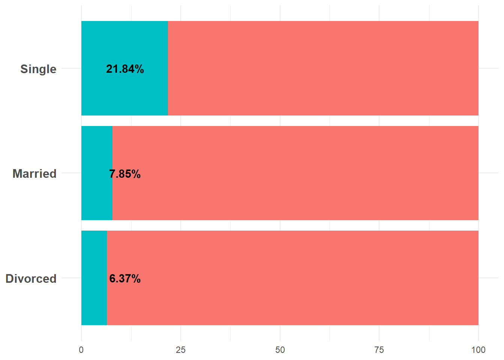
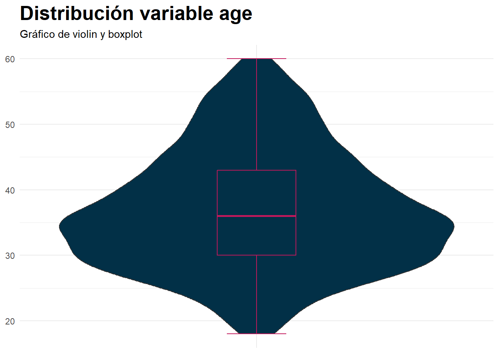
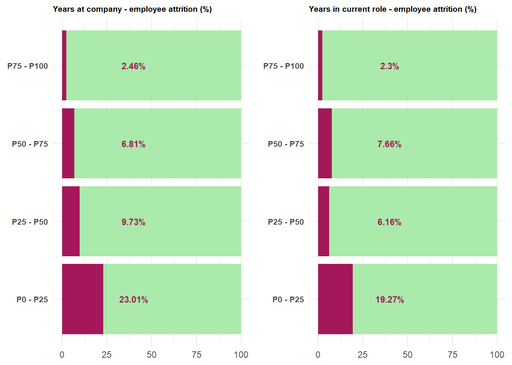

Prática 4: Modelos
ESCENARIO
Según la Organización Mundial de la Salud (OMS), el ictus es la segunda causa de muerte en el mundo, responsable de aproximadamente el 11% del total de fallecimientos.
El conjunto de datos sobre ictus (healthcare_dataset_stroke_data.csv) está compueto por 5110 observaciones (en este caso cada observación corresponde a un paciente) y de un total de 12 variables (10 variables explicativas, una variable id que tomará el rol de identificador y la variable objetivo stroke).
OBJETIVO
Construir un modelo (varios en nuestro caso) para predecir la probabilidad de sufrir un ictus en función de algunas variables de entrada como el sexo, la edad, diversas enfermedades, el hábito de fumar y otras.
ENUNCIADO DE LA PRÁCTICA
Descargarse el conjunto de datos desde el enlace facilitado
Analizar, depurar, procesar y recategorizar los datos (consejo: haz uso de los paquetes
tidyverse,ggpltu otros que hayamos visto que resulten de interés).Determinar la fijación del criterio de bondad de ajuste elegido.
Realizar los siguientes modelos:
Árbol de Decisión
KNN (K-Nearest Neighbors)
SVM (Support Vector Machine)
Red Neuronal
Algún m√©todo de Ensamble: Bagging, Boosting o Stacking (con uno soy feliz ü´†)
La parte del modelado, para cada una de las técnicas menciondas, debe contener los siguientes puntos:
Justificación de hiperparámetros a modelizar y el rango de los mismos.
Determinar el valor de los parámetros óptimos.
Selecci√≥n de modelo ganadorüéñ (en caso de que el propio algoritmo lo permita, explicar dicho modelo) y evaluaci√≥n sobre conjunto Test
Comparar los 5 modelos generados
Consideraciones
El trabajo es individualüèåÔ∏è
El análisis y depuraci√≥n de los datosüßπ es sin duda la fase más importante de un proyecto como en el que nos encontramos, por ello será la parte que más pese del trabajo en comparaci√≥n con el resto de puntos
El trabajo deberá estar explicado (no basta con poner solo las salidas). Es necesario indicar el c√≥digo utilizado. Se valorará la claridad de exposici√≥n en el informe y la estructuraüìù
üìÄIMPORTANTEüìÄ: Toda el contenido matemático se evaluará en la asignatura Matemática y Estad√≠stica para la Inteligencia Artificialüì±. Por lo que subir√©is las entregas tanto a una asignatura como a la otra (Aprendizaje Automático Avanzado)
Librerías
Code
rm(list = ls())
library(tidyverse) # Depuración datos
library(skimr) # Resumen numérico
library(outliers) # Outliers
library(ggplot2) # Gráficos
library(tidymodels) # Modelos
library(rpart) # CART
library(rpart.plot) # Graficar árbol
library(caret) # Matriz de Confusion
library(glue) # pegar texto + variables fácilmente
library(DT) # Para mostrar tabla (formatStyle)
library(ROSE) # Para Oversampling
library(yardstick) # Cómo funcionan modelos
library(forcats) # Para factores
library(solitude) # Isolation Forest
library(mice) # Imputar RF
library(modeest) # Para moda
library(stratification) # Dalenius
library(fastDummies) # Dummies
library(rsample) # Para particion Train/Test
# Combinar gráficos
library(egg)
library(ggimage)
library(ggpubr)
library(hrbrthemes)
library(ggthemes)Preparación de los datos
En primer lugar vamos a importar el dataset con el que se va a trabajar.
dataset_attrition <- read.csv(file = "./data/watson_healthcare_modified.csv")Además vamos a convertir la variable objetivo, que en nuestro caso es Attrition a tipo factor donde podrá obtener los valores No y Yes. Por otro lado se va a realizar una transformación de tal forma que la variable quede representada con valores 1-Yes y 0-No y se mantenga como categórica.
Code
dataset_attrition$Attrition <- factor(dataset_attrition$Attrition)
is.factor(dataset_attrition$Attrition)[1] TRUECode
levels(dataset_attrition$Attrition)[1] "No" "Yes"Code
dataset_attrition <- dataset_attrition |> mutate(Attrition = ifelse(Attrition == "Yes",1,0))
dataset_attrition$Attrition <- as.factor(dataset_attrition$Attrition)También es importante estandarizar los nombres de las variables de nuestro dataset. En general se puede ver que el dataset viene bastante bien preparado ya que no contiene espacios pero si que tiene UpperCamelCase por lo que deberemos convertir las variables a minúsculas.
Code
names(dataset_attrition) [1] "EmployeeID" "Age"
[3] "Attrition" "BusinessTravel"
[5] "Department" "DistanceFromHome"
[7] "Education" "EducationField"
[9] "EmployeeCount" "Gender"
[11] "JobLevel" "JobRole"
[13] "MaritalStatus" "MonthlyIncome"
[15] "NumCompaniesWorked" "Over18"
[17] "OverTime" "PercentSalaryHike"
[19] "StandardHours" "Shift"
[21] "TotalWorkingYears" "TrainingTimesLastYear"
[23] "YearsAtCompany" "YearsInCurrentRole"
[25] "YearsSinceLastPromotion" "YearsWithCurrManager" Code
names(dataset_attrition) <- str_to_lower(names(dataset_attrition))Variable objetivo
Es muy importante conocer la distribución de la variable objetivo para diseñar estrategias de modelado adecuadas, garantizar un entrenamiento justo y obtener métricas confiables.
Con esta visualización de la variable objetivo podremos detectar posibles desbalanceos de nuestro conjunto de datos que nos permitirán crear estrategias para poder suplir estos problemas a la hora de crear los modelos y entrenarlos.
Code
dataset_attrition |> group_by(attrition) |> summarise(nAttrition = n(), Porc = round(n()*100/nrow(dataset_attrition),2)) |> ggplot(aes(x = attrition, y = nAttrition, fill = attrition)) +
geom_col(position = "dodge", alpha = 0.8) +
geom_text(aes(label = paste(nAttrition," (",Porc,"%)")),colour = "black", size = 3.5,vjust = -0.5) +
ylim(0,1500)+
scale_fill_manual(values = c("#4ec475","#f23849")) +
labs(title = "Distribución de la variable objetivo",
subtitle = "Reparto de niveles de la variable objetivo (attrition)")+
theme_minimal()+
theme(plot.title = element_text(size = 20, face = "bold"),
axis.title.y = element_blank(),
axis.title.x =element_blank(),
axis.text.x = element_text(size = 12, face = "bold"),
legend.position = "None")
Como podemos observar nuestra variable objetivo Attrition tiene un 88.13% - 11.87% entre los dos valores que puede obtener, lo que nos indica que es una variable que está muy desbalanceada. A la hora de entrenar los modelos, esto va a tener repercusiones negativas haciendo que no haya buenas predicciones de cuando un empleado vaya a abandonar la empresa.
Para solucionar este problema se buscará una técnica tras realizar el análisis del resto de los datos para compensar esta falta de datos en el 1-Yes de la variable objetivo.
Analisis exploratorio de los datos
Para llevar a cabo este análisis en primer lugar vamos a visualizar un resumen de los datos que tenemos actualmente en el dataset:
dataset_attrition |> skim()| Name | dataset_attrition |
| Number of rows | 1676 |
| Number of columns | 26 |
| _______________________ | |
| Column type frequency: | |
| character | 8 |
| factor | 1 |
| numeric | 17 |
| ________________________ | |
| Group variables | None |
Variable type: character
| skim_variable | n_missing | complete_rate | min | max | empty | n_unique | whitespace |
|---|---|---|---|---|---|---|---|
| businesstravel | 0 | 1 | 10 | 17 | 0 | 3 | 0 |
| department | 0 | 1 | 9 | 10 | 0 | 3 | 0 |
| educationfield | 0 | 1 | 5 | 16 | 0 | 6 | 0 |
| gender | 0 | 1 | 4 | 6 | 0 | 2 | 0 |
| jobrole | 0 | 1 | 5 | 14 | 0 | 5 | 0 |
| maritalstatus | 0 | 1 | 6 | 8 | 0 | 3 | 0 |
| over18 | 0 | 1 | 1 | 1 | 0 | 1 | 0 |
| overtime | 0 | 1 | 2 | 3 | 0 | 2 | 0 |
Variable type: factor
| skim_variable | n_missing | complete_rate | ordered | n_unique | top_counts |
|---|---|---|---|---|---|
| attrition | 0 | 1 | FALSE | 2 | 0: 1477, 1: 199 |
Variable type: numeric
| skim_variable | n_missing | complete_rate | mean | sd | p0 | p25 | p50 | p75 | p100 | hist |
|---|---|---|---|---|---|---|---|---|---|---|
| employeeid | 0 | 1 | 1456795.72 | 248748.62 | 1025177 | 1235831.75 | 1464606 | 1667992.00 | 1886378 | ▇▇▇▇▇ |
| age | 0 | 1 | 36.87 | 9.13 | 18 | 30.00 | 36 | 43.00 | 60 | ▂▇▇▃▂ |
| distancefromhome | 0 | 1 | 9.22 | 8.16 | 1 | 2.00 | 7 | 14.00 | 29 | ▇▅▂▂▂ |
| education | 0 | 1 | 2.91 | 1.03 | 1 | 2.00 | 3 | 4.00 | 5 | ▂▃▇▆▁ |
| employeecount | 0 | 1 | 1.00 | 0.00 | 1 | 1.00 | 1 | 1.00 | 1 | ▁▁▇▁▁ |
| joblevel | 0 | 1 | 2.07 | 1.11 | 1 | 1.00 | 2 | 3.00 | 5 | ▇▇▃▂▁ |
| monthlyincome | 0 | 1 | 6516.51 | 4728.46 | 1009 | 2928.25 | 4899 | 8380.25 | 19999 | ▇▅▂▁▂ |
| numcompaniesworked | 0 | 1 | 2.66 | 2.48 | 0 | 1.00 | 2 | 4.00 | 9 | ▇▃▂▂▁ |
| percentsalaryhike | 0 | 1 | 15.20 | 3.65 | 11 | 12.00 | 14 | 18.00 | 25 | ▇▅▃▂▁ |
| standardhours | 0 | 1 | 80.00 | 0.00 | 80 | 80.00 | 80 | 80.00 | 80 | ▁▁▇▁▁ |
| shift | 0 | 1 | 0.81 | 0.86 | 0 | 0.00 | 1 | 1.00 | 3 | ▇▇▁▂▁ |
| totalworkingyears | 0 | 1 | 11.34 | 7.83 | 0 | 6.00 | 10 | 15.00 | 40 | ▇▆▃▁▁ |
| trainingtimeslastyear | 0 | 1 | 2.81 | 1.29 | 0 | 2.00 | 3 | 3.00 | 6 | ▂▇▇▂▃ |
| yearsatcompany | 0 | 1 | 7.03 | 6.10 | 0 | 3.00 | 5 | 10.00 | 40 | ▇▂▁▁▁ |
| yearsincurrentrole | 0 | 1 | 4.26 | 3.63 | 0 | 2.00 | 3 | 7.00 | 18 | ▇▃▂▁▁ |
| yearssincelastpromotion | 0 | 1 | 2.20 | 3.23 | 0 | 0.00 | 1 | 3.00 | 15 | ▇▁▁▁▁ |
| yearswithcurrmanager | 0 | 1 | 4.14 | 3.56 | 0 | 2.00 | 3 | 7.00 | 17 | ▇▂▅▁▁ |
En esta primera visualización de los datos no se obtiene ningún tipo de dato nulo por lo que no habrá que hacer ningún tipo de conversion de datos.
Analisis de variables
- Variable over18
En primer lugar podemos ver que existe una variable denominada over18 que indica si el trabajador tiene más de 18 años o no. Esta variable normalmente sería dicotómica por su propia definición pero podemos observar que solo tiene un valor.
Code
dataset_attrition |>
mutate(over18 = ifelse(over18 == "Y","Yes","No")) |>
group_by(over18) |>
summarise(nOver18 = n(), Porc = round(n()*100/nrow(dataset_attrition),2)) |>
ggplot(aes(x = over18, y = nOver18, fill = over18)) + geom_col(position = "dodge", alpha = 0.8) + geom_text(aes(label = paste(nOver18," (",Porc,"%)")),colour = "black", size = 3.5,vjust = -0.5)+ ylim(0,2000) + scale_fill_manual(values = c("#4ec475")) + labs(title = "Distribución de la variable over18")+
theme_minimal()+
theme(plot.title = element_text(size = 20, face = "bold"),
axis.title.y = element_blank(),
axis.title.x =element_blank(),
axis.text.x = element_text(size = 12, face = "bold"),
legend.position = "None")
Por lo que podemos deducir que es una variable que no aporta valor predictivo ni analítico y por tanto se puede eliminar de nuestro dataset.
Code
dataset_attrition = select(dataset_attrition, -over18)- Variable employeecount
Esta variable representa el número de empleados por fila dentro del dataset, es una variable redundante ya que por fila solo habrá un empleado dentro de nuestros datos y por tanto no nos aporta ningún tipo de información por lo que puede ser eliminada.
Code
dataset_attrition = select(dataset_attrition, -employeecount)- Variable standardhours
Esta variable representa el número de horas que trabaja un empleado cada dos semanas. Es un valor constante para todos los empleados por lo que al igual que en los dos casos anteriores, no aporta valor ni predictivo ni analítico y se puede eliminar.
Code
dataset_attrition = select(dataset_attrition, -standardhours)- Variable overtime
La variable denominada overtime indica si el empleado ha trabajado horas extras o no. Inicialmente la variable es de tipo char con dos valores diferentes que son Yes y No, por lo que se trata de una variable dicotómica.
Code
dataset_attrition |>
group_by(overtime) |>
summarise(nOvertime = n(), Porc = round(n()*100/nrow(dataset_attrition),2)) |>
ggplot(aes(x = overtime, y = nOvertime, fill = overtime)) + geom_col(position = "dodge", alpha = 0.8) + geom_text(aes(label = paste(nOvertime," (",Porc,"%)")),colour = "black", size = 3.5,vjust = -0.5)+ ylim(0,1300) + labs(title = "Distribución de la variable overtime")+
theme_minimal()+
theme(plot.title = element_text(size = 20, face = "bold"),
axis.title.y = element_blank(),
axis.title.x =element_blank(),
axis.text.x = element_text(size = 12, face = "bold"),
legend.position = "None")
Se va a realizar una transformación de tal forma que las variables dicotómicas queden representadas con valores 1-Yes y 0-No.
Code
dataset_attrition <- dataset_attrition |> mutate(overtime = ifelse(overtime == "Yes",1,0))- Variable maritalstatus
La variable denominada maritalstatus indica el estado civil del empleado, concretamente puede ser Single, Married o Divorced. Se va a estudiar si esta variable puede llegar a ser simplificada a una variable dicotómica en la que se exprese únicamente si el empleado está casado o no.
En primer lugar vamos a ver si existe alguna variable que tenga pocos datos y por tanto pueda juntarse con otra, por ejemplo juntar Single con Divorced ya que no tendrían pareja.
Code
dataset_attrition |>
group_by(maritalstatus) |>
summarise(nMaritalStatus = n(), Porc = round(n()*100/nrow(dataset_attrition),2)) |>
ggplot(aes(x = maritalstatus, y = nMaritalStatus, fill = maritalstatus)) + geom_col(position = "dodge", alpha = 0.8) + geom_text(aes(label = paste(nMaritalStatus," (",Porc,"%)")),colour = "black", size = 3.5,vjust = -0.5)+ ylim(0,1300) + labs(title = "Distribución de la variable maritalstatus")+
theme_minimal()+
theme(plot.title = element_text(size = 20, face = "bold"),
axis.title.y = element_blank(),
axis.title.x =element_blank(),
axis.text.x = element_text(size = 12, face = "bold"),
legend.position = "None")
Observamos que la distribución de esta variable no muestra ningún desbalance en los datos por lo que de momento no se podrá hacer la operación de juntar los campos mencionados anteriormente.
Vamos a relacionar maritalstatus con la variable objetivo para buscar si se podría hacer esta agrupación.
Viendo la relación que se establece entre la variable del abandono del trabajo (variable objetivo) y el estado civil, se va a poder deducir finalmente si la variable podría modificarse o no a una dicotómica que represente si el empleado tiene o no pareja.
Code
# Apuntamos tasas
attrition_married <- round(min(dataset_attrition |> group_by(maritalstatus) |> count(attrition) |> mutate(attrition_ratio = 100*n/sum(n)) |> ungroup() |>
filter(maritalstatus == "Married" & attrition == "1") |> select(attrition_ratio)),2)
attrition_single <- round(min(dataset_attrition |> group_by(maritalstatus) |> count(attrition) |> mutate(attrition_ratio = 100*n/sum(n)) |> ungroup() |>
filter(maritalstatus == "Single" & attrition == "1") |> select(attrition_ratio)),2)
attrition_divorced <- round(min(dataset_attrition |> group_by(maritalstatus) |> count(attrition) |> mutate(attrition_ratio = 100*n/sum(n)) |> ungroup() |>
filter(maritalstatus == "Divorced" & attrition == "1") |> select(attrition_ratio)),2)
dataset_attrition |> group_by(maritalstatus) |> count(attrition) |> mutate(attrition_ratio = 100*n/sum(n)) |>
ggplot(aes(x = maritalstatus, y = attrition_ratio, fill = attrition))+
geom_col()+
coord_flip()+
annotate("text", x = 2, y= 11, label= paste(attrition_married,"%", sep =""),size = 4 ,fontface = "bold") +
annotate("text", x = 3, y= 11, label= paste(attrition_single,"%", sep =""),size = 4 ,fontface = "bold") +
annotate("text", x = 1, y= 11, label= paste(attrition_divorced,"%", sep =""),size = 4 ,fontface = "bold") +
theme_minimal()+
theme(axis.title.y = element_blank(),
axis.title.x =element_blank(),
axis.text.y = element_text(size = 12, face = "bold"),
legend.position = "None"
)Se puede apreciar que la variable Single no tiene un porcentaje parecido a la de Divorced por lo que es mejor mantener separadas estas variables ya que aportan una información diferente.
La mayor tasa de abandono del trabajo en función del estado civil se da cuando el empleado está soltero sin haberse casado anteriormente.
- Variable jobrole
La variable denominada jobrole representa el rol actual que cumple el empleado dentro de la empresa. Se trata de una variable que deberá ser convertida a categórica más adelante tras visualizar el resto de datos. Los valores que puede tomar son Nurse,Therapist,Administrative,Admin y Other.
Code
dataset_attrition |>
group_by(jobrole) |>
summarise(njobrole = n(), Porc = round(n()*100/nrow(dataset_attrition),2)) |>
ggplot(aes(x = jobrole, y = njobrole, fill = jobrole)) + geom_col(position = "dodge", alpha = 0.8) + geom_text(aes(label = paste(njobrole," (",Porc,"%)")),colour = "black", size = 3.5,vjust = -0.5)+ ylim(0,1300) + labs(title = "Distribución de la variable jobrole")+
theme_minimal()+
theme(plot.title = element_text(size = 20, face = "bold"),
axis.title.y = element_blank(),
axis.title.x =element_blank(),
axis.text.x = element_text(size = 12, face = "bold"),
legend.position = "None")
Se va a estudiar si los datos categorizados como Admin y como Administrative pueden llegar a representar el mismo tipo de empleado.
En primer lugar se va a calcular el salario medio por rol para contemplar si los salarios son parecidos, en caso de serlos, podríamos seguir con la hipótesis de que se trata del mismo rol.
Code
dataset_attrition |>
filter(jobrole %in% c("Administrative", "Admin", "Nurse", "Other","Therapist")) |>
group_by(jobrole) |>
summarise(
avg_salary = mean(monthlyincome, na.rm = TRUE)
) |> ggplot(aes(x = jobrole, y = avg_salary, fill = avg_salary)) +
geom_col(position = "dodge", alpha = 0.8) +
ylim(0,18000) +
labs(title = "Salario medio por rol",
subtitle = "Salario medio de los empleados por los diferentes roles dentro de la empresa")+
theme_minimal()+
theme(plot.title = element_text(size = 20, face = "bold"),
axis.title.y = element_blank(),
axis.title.x =element_blank(),
axis.text.x = element_text(size = 12, face = "bold"),
legend.position = "None")
Como observamos en el gráfico nuestras dos categorías muestran un salario medio similar por lo que vamos a seguir con el análisis.
En este caso lo que vamos a hacer es estudiar si se mantienen similares los porcentajes de los departamentos o campos en los que el empleado trabaja dependiendo de si su rol es Admin o Administrative
Code
admin_departments <- dataset_attrition |> group_by(department) |> count(jobrole) |> filter(jobrole == "Admin") |>
ungroup() |> mutate(percentage = (n / sum(n)) * 100)
plot1 <- ggplot(admin_departments, aes(x = department, y = percentage, fill = department)) +
geom_bar(stat = "identity") +
labs(
title = "Admin por departamento (%)"
) +
scale_y_continuous(labels = scales::percent_format(scale = 1)) +
theme_minimal() +
theme(
axis.title.y = element_blank(),
axis.title.x =element_blank(),
legend.position = "none")
administrative_departments <- dataset_attrition |> group_by(department) |> count(jobrole) |> filter(jobrole == "Administrative") |> ungroup() |> mutate(percentage = (n / sum(n)) * 100)
plot2 <- ggplot(administrative_departments, aes(x = department, y = percentage, fill = department)) +
geom_bar(stat = "identity") +
labs(
title = "Administrativo por departamento (%)"
) +
scale_y_continuous(labels = scales::percent_format(scale = 1)) +
theme_minimal() +
theme(
axis.title.y = element_blank(),
axis.title.x =element_blank(),
legend.position = "none")
grid.arrange(plot1, plot2, ncol = 2)
Con estos gráficos podemos observar que los porcentajes de Admin y Administrative en los diferentes departamentos o campos de trabajo son similares, por lo que sumado a una media de salario similar podemos llegar a deducir que la categoría Admin se puede comportar como Administrative
Code
dataset_attrition <- dataset_attrition |> mutate(jobrole = ifelse(jobrole == "Admin","Administrative", jobrole))Code
dataset_attrition |>
group_by(jobrole) |>
summarise(njobrole = n(), Porc = round(n()*100/nrow(dataset_attrition),2)) |>
ggplot(aes(x = jobrole, y = njobrole, fill = jobrole)) + geom_col(position = "dodge", alpha = 0.8) + geom_text(aes(label = paste(njobrole," (",Porc,"%)")),colour = "black", size = 3.5,vjust = -0.5)+ ylim(0,1300) + labs(title = "Distribución de la variable jobrole modificada")+
theme_minimal()+
theme(plot.title = element_text(size = 20, face = "bold"),
axis.title.y = element_blank(),
axis.title.x =element_blank(),
axis.text.x = element_text(size = 12, face = "bold"),
legend.position = "None")
- Variable businesstravel
La variable businesstravel representa la frecuencia de viajes de negocios de los distintos empleados de la compañía. Existen tres categorías Travel_Rarely, Non_Travel y por último Travel_Frecuently
Code
dataset_attrition |>
group_by(businesstravel) |>
summarise(nBusinessTravel = n(), Porc = round(n()*100/nrow(dataset_attrition),2)) |>
ggplot(aes(x = businesstravel, y = nBusinessTravel, fill = businesstravel)) + geom_col(position = "dodge", alpha = 0.8) + geom_text(aes(label = paste(nBusinessTravel," (",Porc,"%)")),colour = "black", size = 3.5,vjust = -0.5)+ ylim(0,1200) + labs(title = "Distribución de la variable businesstravel")+
theme_minimal()+
theme(plot.title = element_text(size = 15, face = "bold"),
axis.title.y = element_blank(),
axis.title.x =element_blank(),
axis.text.x = element_text(size = 12, face = "bold"),
legend.position = "None")Observando las diferentes categorías podemos deducir que se pueden simplificar los datos a viaja o no viaja el empleado. Esto convertirá la variable en dicotómica.
Code
dataset_attrition <- dataset_attrition |> mutate(businesstravel = ifelse(businesstravel == "Non-Travel",0,1))Por tanto obtendremos la variable businesstravel con dos valores posibles, 0 cuando no viaje y 1 cuando el empleado viaje.
Code
dataset_attrition |>
group_by(businesstravel) |>
summarise(nBusinessTravel = n(), Porc = round(n()*100/nrow(dataset_attrition),2)) |>
ggplot(aes(x = as.factor(businesstravel), y = nBusinessTravel, fill = as.factor(businesstravel))) +
geom_col(position = "dodge", alpha = 1) +
geom_text(aes(label = paste(nBusinessTravel," (",Porc,"%)")),colour = "black", size = 3.5,vjust = -0.5)+ ylim(0,1600) +
labs(title = "Distribución de la variable businesstravel modificada") +
theme_minimal()+
theme(plot.title = element_text(size = 15, face = "bold"),
axis.title.y = element_blank(),
axis.title.x =element_blank(),
axis.text.x = element_text(size = 12, face = "bold"),
legend.position = "None")- Variable educationfield
Esta variable representa el campo en el que se ha formado el empleado. Inicialmente existen diferentes categorías Human Resources, Marketing, Life Sciences, Medical, Technical Degree y Other.
En primer lugar vamos a visualizar como queda distribuida esta variable en función de las categorías iniciales.
Code
dataset_attrition |>
group_by(educationfield) |>
summarise(neducationfield = n(), Porc = round(n()*100/nrow(dataset_attrition),2)) |>
ggplot(aes(x = educationfield, y = neducationfield, fill = educationfield)) + geom_col(position = "dodge", alpha = 0.8) + geom_text(aes(label = paste(neducationfield," (",Porc,"%)")),colour = "black", size = 3.5,vjust = -0.5)+ ylim(0,1200) + labs(title = "Distribución de la variable educationfield")+
theme_minimal()+
theme(plot.title = element_text(size = 20, face = "bold"),
axis.title.y = element_blank(),
axis.title.x =element_blank(),
axis.text.x = element_text(size = 9, face = "bold"),
legend.position = "None")
Todas estas categorías representan diferentes ámbitos dentro del mundo laboral y formativo, pero pueden ser agrupadas de una forma más simple. Esta forma es el tipo de ciencia o itinerario al que pertenecen.
Por ejemplo, las personas formadas en Recursos Humanos y Marketing, comparten su formación en ciencias sociales ya que para cursar grados o ciclos formativos de estos estudios se necesita normalmente formación previa en un itinerario orientado a las ciencias sociales.
Ocurre lo mismo con las categorías Medical y Life Sciences. Estas pueden juntarse en una sola categoría ya que a pesar de la amplitud del campo de la medicina, esta sigue siendo parte de las ciencias biológicas.
Code
dataset_attrition <- dataset_attrition |>
mutate(educationfield = case_when(
educationfield %in% c("Human Resources", "Marketing") ~ "Social sciences",
educationfield %in% c("Life Sciences", "Medical") ~ "Life sciences",
educationfield == "Technical Degree" ~ "Technological sciences",
TRUE ~ educationfield # Mantener el resto como están (other)
))Code
dataset_attrition |>
group_by(educationfield) |>
summarise(neducationfield = n(), Porc = round(n()*100/nrow(dataset_attrition),2)) |>
ggplot(aes(x = educationfield, y = neducationfield, fill = educationfield)) + geom_col(position = "dodge", alpha = 0.8) + geom_text(aes(label = paste(neducationfield," (",Porc,"%)")),colour = "black", size = 3.5,vjust = -0.5)+ ylim(0,1250) + labs(title = "Distribución de la variable educationfield modificada")+
theme_minimal()+
theme(plot.title = element_text(size = 16, face = "bold"),
axis.title.y = element_blank(),
axis.title.x =element_blank(),
axis.text.x = element_text(size = 10, face = "bold"),
legend.position = "None")
Por último se van a analizar las variables restantes de tipo character gender y department
Estas variables tienen representatividad en sus diferentes niveles por lo que no van a sufrir ningún tipo de modificación.
Code
plot_gender <- dataset_attrition |>
group_by(gender) |>
summarise(nGender = n(), Porc = round(n()*100/nrow(dataset_attrition),2)) |>
ggplot(aes(x = gender, y = nGender, fill = gender)) + geom_col(position = "dodge", alpha = 0.8) + geom_text(aes(label = paste(nGender," (",Porc,"%)")),colour = "black", size = 3.5,vjust = -0.5)+ ylim(0,1000) + labs(title = "Distribución de la variable gender")+
theme_minimal()+
theme(plot.title = element_text(size = 12, face = "bold"),
axis.title.y = element_blank(),
axis.title.x =element_blank(),
axis.text.x = element_text(size = 10, face = "bold"),
legend.position = "None")
plot_department <- dataset_attrition |>
group_by(department) |>
summarise(nDepartment = n(), Porc = round(n()*100/nrow(dataset_attrition),2)) |>
ggplot(aes(x = department, y = nDepartment, fill = department)) + geom_col(position = "dodge", alpha = 0.8) + geom_text(aes(label = paste(nDepartment," (",Porc,"%)")),colour = "black", size = 3.5,vjust = -0.5)+ ylim(0,1000) + labs(title = "Distribución de la variable department")+
theme_minimal()+
theme(plot.title = element_text(size = 12, face = "bold"),
axis.title.y = element_blank(),
axis.title.x =element_blank(),
axis.text.x = element_text(size = 10, face = "bold"),
legend.position = "None")
grid.arrange(plot_gender, plot_department, ncol = 2)
A la hora de analizar las variables numéricas es muy importante también considerar el tratamiento de outliers en las mismas. Se van a revisar las diferentes variables numéricas para conocer aquellas que requieren o no del tratamiento de outliers.
En primer lugar se van a identificar aquellas variables que no son numéricas por definición. En nuestro dataset, existen diferentes variables que a pesar de ser numéricas representan realmente categorías, estas variables son las siguientes:
- Variable joblevel
La variable joblevel representa el nivel del empleado en la empresa. Este nivel está ligado al escalafón de la propia empresa. Siendo 1 el nivel más bajo y 5 el más alto.
Se trata de una variable que realmente no es numérica ya que tiene un número definido de categorías entre las cuales se pueden mover los diferentes empleados.
Code
dataset_attrition |>
group_by(joblevel) |>
summarise(nJobLevel = n(), Porc = round(n()*100/nrow(dataset_attrition),2)) |>
ggplot(aes(x = as.factor(joblevel), y = nJobLevel, fill = as.factor(joblevel))) + geom_col(position = "dodge", alpha = 0.8) + geom_text(aes(label = paste(nJobLevel," (",Porc,"%)")),colour = "black", size = 3.5,vjust = -0.5)+ ylim(0,650) + labs(title = "Distribución de la variable joblevel")+
theme_minimal()+
theme(plot.title = element_text(size = 16, face = "bold"),
axis.title.y = element_blank(),
axis.title.x =element_blank(),
axis.text.x = element_text(size = 12, face = "bold"),
legend.position = "None")- Variable shift
La variable shift representa los turnos de trabajo de los diferentes empleados. Puede tomar los siguientes valores, 0 - Employees with own schedule, 1 - 7am to 3:30pm, 2 - 2pm to 10pm, 3 - 9pm to 7am
Se trata de una variable que realmente es categórica por el mismo motivo que joblevel. Por lo que posteriormente también se hará la conversión de numérica a categórica de esta variable.
Code
dataset_attrition |>
group_by(shift) |>
summarise(nShift = n(), Porc = round(n()*100/nrow(dataset_attrition),2)) |>
ggplot(aes(x = as.factor(shift), y = nShift, fill = as.factor(shift))) + geom_col(position = "dodge", alpha = 0.8) + geom_text(aes(label = paste(nShift," (",Porc,"%)")),colour = "black", size = 3.5,vjust = -0.5)+ ylim(0,750) + labs(title = "Distribución de la variable shift")+
theme_minimal()+
theme(plot.title = element_text(size = 16, face = "bold"),
axis.title.y = element_blank(),
axis.title.x =element_blank(),
axis.text.x = element_text(size = 12, face = "bold"),
legend.position = "None")
- Variable education
La variable education representa el nivel educativo los diferentes empleados. Toma valores desde, 1 a 5 siendo este último el mayor nivel educativo de todos.
Se trata de una variable que también es categórica por el mismo motivo que shift y que joblevel. Por lo que posteriormente se convertirá a categórica.
Code
dataset_attrition |>
group_by(education) |>
summarise(nEducation = n(), Porc = round(n()*100/nrow(dataset_attrition),2)) |>
ggplot(aes(x = as.factor(education), y = nEducation, fill = as.factor(education))) + geom_col(position = "dodge", alpha = 0.8) + geom_text(aes(label = paste(nEducation," (",Porc,"%)")),colour = "black", size = 3.5,vjust = -0.5)+ ylim(0,750) + labs(title = "Distribución de la variable education")+
theme_minimal()+
theme(plot.title = element_text(size = 16, face = "bold"),
axis.title.y = element_blank(),
axis.title.x =element_blank(),
axis.text.x = element_text(size = 12, face = "bold"),
legend.position = "None")- Variable age
La variable age representa la edad de los empleados. Se trata de una variable númerica.
Code
dataset_attrition |> ggplot( aes(x=as.factor(1), y=age, fill = "#023047" )) +
geom_violin(width = 1) +
stat_boxplot(geom = "errorbar", width = 0.15,color = "#C2185B") +
geom_boxplot(width=0.2, color="#C2185B", alpha = 1 ) +
scale_fill_manual(values = c("#023047")) +
labs(title = "Distribución variable age",
subtitle = "Gráfico de violin y boxplot")+
theme_minimal()+
theme(axis.title.y = element_blank(),
axis.title.x =element_blank(),
axis.text.x = element_blank(),
legend.position = "None",
plot.title = element_text(size = 20, face = "bold")
)
Podemos observar que no existen outliers por lo que no se hará un tratamiento especial de la variable age.
- Variables yearsatcompany, yearsincurrentrole, yearssincelastpromotion y yearswithcurrmanager
La variable yearsatcompany el número de años en la compañia de cada empleado.
La variable yearsincurrentrole el número de años en un rol concreto dentro de la compañía de cada empleado.
La variable yearssincelastpromotion el número de años desde que el empleado recibió su último ascenso.
La variable yearswithcurrmanager el número de años que lleva trabajando para un jefe concreto.
Code
gg_yearsatcompany <- dataset_attrition |> ggplot( aes(x=as.factor(1), y=yearsatcompany, fill = "#023047" )) +
geom_violin(width = 1) +
stat_boxplot(geom = "errorbar", width = 0.15,color = "#C2185B") +
geom_boxplot(width=0.2, color="#C2185B", alpha = 1 ) +
scale_fill_manual(values = c("#023047")) +
labs(title = "Distribución variable yearsatcompany")+
theme_minimal()+
theme(axis.title.y = element_blank(),
axis.title.x =element_blank(),
axis.text.x = element_blank(),
legend.position = "None",
plot.title = element_text(size = 12, face = "bold")
)
gg_yearsincurrentrole <- dataset_attrition |> ggplot( aes(x=as.factor(1), y=yearsincurrentrole, fill = "#023047" )) +
geom_violin(width = 1) +
stat_boxplot(geom = "errorbar", width = 0.15,color = "#C2185B") +
geom_boxplot(width=0.2, color="#C2185B", alpha = 1 ) +
scale_fill_manual(values = c("#023047")) +
labs(title = "Distribución variable yearsincurrentrole")+
theme_minimal()+
theme(axis.title.y = element_blank(),
axis.title.x =element_blank(),
axis.text.x = element_blank(),
legend.position = "None",
plot.title = element_text(size = 12, face = "bold")
)
gg_yearssincelastpromotion <- dataset_attrition |> ggplot( aes(x=as.factor(1), y=yearssincelastpromotion, fill = "#023047" )) +
geom_violin(width = 1) +
stat_boxplot(geom = "errorbar", width = 0.15,color = "#C2185B") +
geom_boxplot(width=0.2, color="#C2185B", alpha = 1 ) +
scale_fill_manual(values = c("#023047")) +
labs(title = "Distribución variable yearssincelastpromotion")+
theme_minimal()+
theme(axis.title.y = element_blank(),
axis.title.x =element_blank(),
axis.text.x = element_blank(),
legend.position = "None",
plot.title = element_text(size = 10, face = "bold")
)
gg_yearswithcurrmanager <- dataset_attrition |> ggplot( aes(x=as.factor(1), y=yearswithcurrmanager, fill = "#023047" )) +
geom_violin(width = 1) +
stat_boxplot(geom = "errorbar", width = 0.15,color = "#C2185B") +
geom_boxplot(width=0.2, color="#C2185B", alpha = 1 ) +
scale_fill_manual(values = c("#023047")) +
labs(title = "Distribución variable yearswithcurrmanager")+
theme_minimal()+
theme(axis.title.y = element_blank(),
axis.title.x =element_blank(),
axis.text.x = element_blank(),
legend.position = "None",
plot.title = element_text(size = 10, face = "bold")
)
ggarrange(gg_yearsatcompany,gg_yearsincurrentrole,gg_yearssincelastpromotion,gg_yearswithcurrmanager, ncol=2, nrow = 2, common.legend = TRUE, legend = "none")
Observando todas las gráficas vemos como todas las variables tienen una distribución asimétrica con presencia de outliers que se van a tratar posteriormente.
- Variable distancefromhome
La variable distancefromhome es una variable numérica que representa la distancia que tiene cada empleado desde su casa hasta el trabajo.
Code
dataset_attrition |> ggplot( aes(x=as.factor(1), y=distancefromhome, fill = "#023047" )) +
geom_violin(width = 1) +
stat_boxplot(geom = "errorbar", width = 0.15,color = "#C2185B") +
geom_boxplot(width=0.2, color="#C2185B", alpha = 1 ) +
scale_fill_manual(values = c("#023047")) +
labs(title = "Distribución variable distancefromhome")+
theme_minimal()+
theme(axis.title.y = element_blank(),
axis.title.x =element_blank(),
axis.text.x = element_blank(),
legend.position = "None",
plot.title = element_text(size = 20, face = "bold")
)
Se observa en la gráfica de distribución de distancefromhome como existe asimetría en la distribución de la variable. A pesar de esta asimetría, no existen outliers por lo que no se deberá hacer un tratamiento especial de esta variable.
- Variable monthlyincome
La variable monthlyincome es una variable numérica que representa el sueldo mensual de cada empleado.
Code
dataset_attrition |> ggplot( aes(x=as.factor(1), y=monthlyincome, fill = "#023047" )) +
geom_violin(width = 1) +
stat_boxplot(geom = "errorbar", width = 0.15,color = "#C2185B") +
geom_boxplot(width=0.2, color="#C2185B", alpha = 1 ) +
scale_fill_manual(values = c("#023047")) +
labs(title = "Distribución variable monthlyincome")+
theme_minimal()+
theme(axis.title.y = element_blank(),
axis.title.x =element_blank(),
axis.text.x = element_blank(),
legend.position = "None",
plot.title = element_text(size = 20, face = "bold")
)
Observamos que existen outliers en esta variable así como asimetría de su distribución por lo que si que se llevará a cabo un tratamiento de outliers.
- Variable numcompaniesworked
La variable numcompaniesworked es una variable numérica que representa el número de compañías en las que ha trabajado un empleado.
dataset_attrition |> ggplot( aes(x=as.factor(1), y=numcompaniesworked, fill = "#023047" )) +
geom_violin(width = 1) +
stat_boxplot(geom = "errorbar", width = 0.15,color = "#C2185B") +
geom_boxplot(width=0.2, color="#C2185B", alpha = 1 ) +
scale_fill_manual(values = c("#023047")) +
labs(title = "Distribución variable numcompaniesworked")+
theme_minimal()+
theme(axis.title.y = element_blank(),
axis.title.x =element_blank(),
axis.text.x = element_blank(),
legend.position = "None",
plot.title = element_text(size = 20, face = "bold")
)
Con la distribución de la variable numcompaniesworked podemos detectar que hay asimetría y que además existen ciertos valores outlier.
- Variable percentsalaryhike
La variable percentsalaryhike es una variable numérica que representa el porcentaje de salario que ha aumentado en la subida de sueldo más reciente de un empleado.
dataset_attrition |> ggplot( aes(x=as.factor(1), y=percentsalaryhike, fill = "#023047" )) +
geom_violin(width = 1) +
stat_boxplot(geom = "errorbar", width = 0.15,color = "#C2185B") +
geom_boxplot(width=0.2, color="#C2185B", alpha = 1 ) +
scale_fill_manual(values = c("#023047")) +
labs(title = "Distribución variable percentsalaryhike")+
theme_minimal()+
theme(axis.title.y = element_blank(),
axis.title.x =element_blank(),
axis.text.x = element_blank(),
legend.position = "None",
plot.title = element_text(size = 20, face = "bold")
)
Observamos asimetría en los datos, pero en este caso no detectamos outliers por lo que no se hará un tratamiento especial de la variable percentsalaryhike
- Variables totalworkingyears y trainingtimeslastyear
La variable totalworkingyears representa el número total de años trabajados de cada empleado. Se trata de una variable numérica.
La variable trainingtimeslastyear se trata de el número de días destinados a charlas, cursos … de un empleado en el anterior año laboral.
Code
gg_totalworkingyears <- dataset_attrition |> ggplot( aes(x=as.factor(1), y=totalworkingyears, fill = "#023047" )) +
geom_violin(width = 1) +
stat_boxplot(geom = "errorbar", width = 0.15,color = "#C2185B") +
geom_boxplot(width=0.2, color="#C2185B", alpha = 1 ) +
scale_fill_manual(values = c("#023047")) +
labs(title = "Distribución variable totalworkingyears")+
theme_minimal()+
theme(axis.title.y = element_blank(),
axis.title.x =element_blank(),
axis.text.x = element_blank(),
legend.position = "None",
plot.title = element_text(size = 12, face = "bold")
)
gg_trainingtimeslastyear <- dataset_attrition |> ggplot( aes(x=as.factor(1), y=trainingtimeslastyear, fill = "#023047" )) +
geom_violin(width = 1) +
stat_boxplot(geom = "errorbar", width = 0.15,color = "#C2185B") +
geom_boxplot(width=0.2, color="#C2185B", alpha = 1 ) +
scale_fill_manual(values = c("#023047")) +
labs(title = "Distribución variable trainingtimeslastyear")+
theme_minimal()+
theme(axis.title.y = element_blank(),
axis.title.x =element_blank(),
axis.text.x = element_blank(),
legend.position = "None",
plot.title = element_text(size = 12, face = "bold")
)
ggarrange(gg_totalworkingyears,gg_trainingtimeslastyear, ncol=2, common.legend = TRUE, legend = "none")
Con esta gráfica podemos deducir que la distribución de totalworkingyears presenta asimetría y valores outliers.
Por otro lado la distribución de trainingtimelastyear es simétrica aunque observamos que los valores bajos tienen mucha mayor variabilidad respecto a la mediana. En esta gráfica también encontramos ciertos valores outliers por lo que se deberá hacer un tratamiento de esta variable de la misma forma que de totalworkingyears.
Relación de variables con la variable objetivo
- Variable gender
Las tasas de abandono del puesto laboral en función de la variable gender son las siguientes:
Code
attrition_male <- round(min(dataset_attrition |> group_by(gender) |> count(attrition) |> mutate(attrition_ratio = 100*n/sum(n)) |> ungroup() |> filter(gender == "Male" & attrition == "1") |> select(attrition_ratio)),2)
attrition_female <- round(min(dataset_attrition |> group_by(gender) |> count(attrition) |> mutate(attrition_ratio = 100*n/sum(n)) |> ungroup() |> filter(gender == "Female" & attrition == "1") |> select(attrition_ratio)),2)
dataset_attrition |> group_by(gender) |> count(attrition) |> mutate(attrition_ratio = 100*n/sum(n)) |>
ggplot(aes(x = gender, y = attrition_ratio, fill = attrition))+
geom_col()+
coord_flip()+
annotate("text", x = 1, y= 20, label= paste(attrition_female,"%", sep =""),size = 4 , color = "#A4185B",fontface = "bold") +
annotate("text", x = 2, y= 20, label= paste(attrition_male,"%", sep =""),size = 4 , color = "#A4185B",fontface = "bold") +
scale_fill_manual(values = c("#AAEAAA", "#A4185B"))+
labs(title = "Gender employee attrition (%)")+
theme_minimal()+
theme(axis.title.y = element_blank(),
axis.title.x =element_blank(),
axis.text.y = element_text(size = 12, face = "bold"),
legend.position = "None",
plot.title = element_text(size = 12, face = "bold")
)Podemos observar como existe una mayor tasa de abandono laboral por parte de las mujeres (la tasa en mujeres supone un 12.01% de diferencia respecto a los hombres).
Otro aspecto interesante a observar en función de nuestra variable objetivo puede ser el departamento. Así se podrá conocer el departamento en el que más abandono laboral se produce dentro de la empresa.
- Variable businesstravel
En primer lugar vamos a categorizar la variable businesstravel:
dataset_attrition$businesstravel <- as.factor(dataset_attrition$businesstravel)Las tasas de abandono del puesto laboral en función de la variable businesstravel son las siguientes:
Code
attrition_not_travel <- round(min(dataset_attrition |> group_by(businesstravel) |> count(attrition) |> mutate(attrition_ratio = 100*n/sum(n)) |> ungroup() |> filter(businesstravel == "0" & attrition == "1") |> select(attrition_ratio)),2)
attrition_travel <- round(min(dataset_attrition |> group_by(businesstravel) |> count(attrition) |> mutate(attrition_ratio = 100*n/sum(n)) |> ungroup() |> filter(businesstravel == "1" & attrition == "1") |> select(attrition_ratio)),2)
dataset_attrition |> group_by(businesstravel) |> count(attrition) |> mutate(attrition_ratio = 100*n/sum(n)) |>
ggplot(aes(x = businesstravel, y = attrition_ratio, fill = attrition))+
geom_col()+
annotate("text", x = 1, y= 20, label= paste(attrition_not_travel,"%", sep =""),size = 4 , color = "#A4185B",fontface = "bold") +
annotate("text", x = 2, y= 20, label= paste(attrition_travel,"%", sep =""),size = 4 , color = "#A4185B",fontface = "bold") +
scale_fill_manual(values = c("#AAEAAA", "#A4185B"))+
labs(title = "Businesstravel employee attrition (%)")+
theme_minimal()+
theme(axis.title.y = element_blank(),
axis.title.x =element_blank(),
axis.text.y = element_text(size = 12, face = "bold"),
legend.position = "None",
plot.title = element_text(size = 12, face = "bold")
)
Existe un mayor abandono laboral en los empleados que realizan viajes (12,17%) que en los que no realizan ningún tipo de viaje (9.3%)
- Variable department
Para relacionar la variable department con la variable objetivo simplemente se va a filtrar en función de los diferentes departamentos de la empresa.
En este punto convertiremos ya la variable department a categórica.
dataset_attrition$department <- as.factor(dataset_attrition$department)Code
attrition_Cardiology <- round(min(dataset_attrition |> group_by(department) |> count(attrition) |> mutate(attrition_ratio = 100*n/sum(n)) |> ungroup() |> filter(department == "Cardiology" & attrition == "1") |> select(attrition_ratio)),2)
attrition_Maternity <- round(min(dataset_attrition |> group_by(department) |> count(attrition) |> mutate(attrition_ratio = 100*n/sum(n)) |> ungroup() |> filter(department == "Maternity" & attrition == "1") |> select(attrition_ratio)),2)
attrition_Neurology <- round(min(dataset_attrition |> group_by(department) |> count(attrition) |> mutate(attrition_ratio = 100*n/sum(n)) |> ungroup() |> filter(department == "Neurology" & attrition == "1") |> select(attrition_ratio)),2)
dataset_attrition |> group_by(department) |> count(attrition) |> mutate(attrition_ratio = 100*n/sum(n)) |>
ggplot(aes(x = department, y = attrition_ratio, fill = attrition))+
geom_col()+
coord_flip()+
annotate("text", x = 1, y= 20, label= paste(attrition_Cardiology,"%", sep =""),size = 4 , color = "#A4185B",fontface = "bold") +
annotate("text", x = 2, y= 20, label= paste(attrition_Maternity,"%", sep =""),size = 4 , color = "#A4185B",fontface = "bold") +
annotate("text", x = 3, y= 20, label= paste(attrition_Neurology,"%", sep =""),size = 4 , color = "#A4185B",fontface = "bold") +
scale_fill_manual(values = c("#AAEAAA", "#A4185B"))+
labs(title = "Department employee attrition (%)")+
theme_minimal()+
theme(axis.title.y = element_blank(),
axis.title.x =element_blank(),
axis.text.y = element_text(size = 12, face = "bold"),
legend.position = "None",
plot.title = element_text(size = 12, face = "bold")
)
El departamento en el que más abandono laboral se produce es el de cardiología y en el que menos con bastante diferencia es el de neurología. Por lo que interpretando estos datos, podría haber peores condiciones laborales en el departamento de cardiología.
Por último, respecto a las variables que originalmente eran de tipo character, se va a observar también la relación de la variable objetivo con la variable overtime
- Variable educationfield, jobrole y maritalstatus
Se van a relacionar con nuestra variable objetivo las variables educationfield, jobrole y maritalstatus.
Code
attrition_lsciences <- round(min(dataset_attrition |> group_by(educationfield) |> count(attrition) |> mutate(attrition_ratio = 100*n/sum(n)) |> ungroup() |> filter(educationfield == 'Life sciences' & attrition == 1) |> select(attrition_ratio)),2)
attrition_other <- round(min(dataset_attrition |> group_by(educationfield) |> count(attrition) |> mutate(attrition_ratio = 100*n/sum(n)) |> ungroup() |> filter(educationfield == 'Other' & attrition == 1) |> select(attrition_ratio)),2)
attrition_ssciences <- round(min(dataset_attrition |> group_by(educationfield) |> count(attrition) |> mutate(attrition_ratio = 100*n/sum(n)) |> ungroup() |> filter(educationfield == 'Social sciences' & attrition == 1) |> select(attrition_ratio)),2)
attrition_tsciences <- round(min(dataset_attrition |> group_by(educationfield) |> count(attrition) |> mutate(attrition_ratio = 100*n/sum(n)) |> ungroup() |> filter(educationfield == 'Technological sciences' & attrition == 1) |> select(attrition_ratio)),2)
dataset_attrition |> group_by(educationfield) |> count(attrition) |> mutate(attrition_ratio = 100*n/sum(n)) |>
ggplot(aes(x = as.factor(educationfield), y = attrition_ratio, fill = attrition))+
geom_col()+
labs(title = "Educationfield employee attrition (%)") +
annotate("text", x = 1, y= 20, label= paste(attrition_lsciences,"%", sep =""),size = 4 , color = "#A4185B",fontface = "bold") +
annotate("text", x = 2, y= 20, label= paste(attrition_other,"%", sep =""),size = 4 , color = "#A4185B",fontface = "bold") +
annotate("text", x = 3, y= 20, label= paste(attrition_ssciences,"%", sep =""),size = 4 , color = "#A4185B",fontface = "bold") +
annotate("text", x = 4, y= 20, label= paste(attrition_tsciences,"%", sep =""),size = 4 , color = "#A4185B",fontface = "bold") +
scale_fill_manual(values = c("#AAEAAA", "#A4185B"))+
theme_minimal()+
theme(axis.title.y = element_blank(),
axis.title.x =element_blank(),
axis.text.x = element_text(size = 10, face = "bold"),
legend.position = "None",
plot.title = element_text(size = 12, face = "bold")
)
En cuanto a la variable educationfield es destacable que los campos con más tasa de abandono laboral son las ciencias sociales y las ciencias tecnológicas.
Code
attrition_admin <- round(min(dataset_attrition |> group_by(jobrole) |> count(attrition) |> mutate(attrition_ratio = 100*n/sum(n)) |> ungroup() |> filter(jobrole == 'Administrative' & attrition == 1) |> select(attrition_ratio)),2)
attrition_nurse <- round(min(dataset_attrition |> group_by(jobrole) |> count(attrition) |> mutate(attrition_ratio = 100*n/sum(n)) |> ungroup() |> filter(jobrole == 'Nurse' & attrition == 1) |> select(attrition_ratio)),2)
attrition_other <- round(min(dataset_attrition |> group_by(jobrole) |> count(attrition) |> mutate(attrition_ratio = 100*n/sum(n)) |> ungroup() |> filter(jobrole == 'Other' & attrition == 1) |> select(attrition_ratio)),2)
attrition_therapist <- round(min(dataset_attrition |> group_by(jobrole) |> count(attrition) |> mutate(attrition_ratio = 100*n/sum(n)) |> ungroup() |> filter(jobrole == 'Therapist' & attrition == 1) |> select(attrition_ratio)),2)
dataset_attrition |> group_by(jobrole) |> count(attrition) |> mutate(attrition_ratio = 100*n/sum(n)) |>
ggplot(aes(x = as.factor(jobrole), y = attrition_ratio, fill = attrition))+
geom_col()+
labs(title = "Jobrole employee attrition (%)") +
annotate("text", x = 1, y= 20, label= paste(attrition_admin,"%", sep =""),size = 4 , color = "#A4185B",fontface = "bold") +
annotate("text", x = 2, y= 20, label= paste(attrition_nurse,"%", sep =""),size = 4 , color = "#A4185B",fontface = "bold") +
annotate("text", x = 3, y= 20, label= paste(attrition_other,"%", sep =""),size = 4 , color = "#A4185B",fontface = "bold") +
annotate("text", x = 4, y= 20, label= paste(attrition_therapist,"%", sep =""),size = 4 , color = "#A4185B",fontface = "bold") +
scale_fill_manual(values = c("#AAEAAA", "#A4185B"))+
theme_minimal()+
theme(axis.title.y = element_blank(),
axis.title.x =element_blank(),
axis.text.x = element_text(size = 10, face = "bold"),
legend.position = "None",
plot.title = element_text(size = 12, face = "bold")
)
Por otro lado, en la variable jobrole, es muy destacable que los administrativos y terapeutas no tienen casi tasa de abandono laboral pero puestos como enfermera u otros tienen una muy alta tasa.
Code
attrition_divorced <- round(min(dataset_attrition |> group_by(maritalstatus) |> count(attrition) |> mutate(attrition_ratio = 100*n/sum(n)) |> ungroup() |> filter(maritalstatus == 'Divorced' & attrition == 1) |> select(attrition_ratio)),2)
attrition_married <- round(min(dataset_attrition |> group_by(maritalstatus) |> count(attrition) |> mutate(attrition_ratio = 100*n/sum(n)) |> ungroup() |> filter(maritalstatus == 'Married' & attrition == 1) |> select(attrition_ratio)),2)
attrition_single <- round(min(dataset_attrition |> group_by(maritalstatus) |> count(attrition) |> mutate(attrition_ratio = 100*n/sum(n)) |> ungroup() |> filter(maritalstatus == 'Single' & attrition == 1) |> select(attrition_ratio)),2)
dataset_attrition |> group_by(maritalstatus) |> count(attrition) |> mutate(attrition_ratio = 100*n/sum(n)) |>
ggplot(aes(x = as.factor(maritalstatus), y = attrition_ratio, fill = attrition))+
geom_col()+
labs(title = "Maritalstatus employee attrition (%)") +
annotate("text", x = 1, y= 20, label= paste(attrition_divorced,"%", sep =""),size = 4 , color = "#A4185B",fontface = "bold") +
annotate("text", x = 2, y= 20, label= paste(attrition_married,"%", sep =""),size = 4 , color = "#A4185B",fontface = "bold") +
annotate("text", x = 3, y= 30, label= paste(attrition_single,"%", sep =""),size = 4 , color = "#A4185B",fontface = "bold") +
scale_fill_manual(values = c("#AAEAAA", "#A4185B"))+
theme_minimal()+
theme(axis.title.y = element_blank(),
axis.title.x =element_blank(),
axis.text.x = element_text(size = 10, face = "bold"),
legend.position = "None",
plot.title = element_text(size = 12, face = "bold")
)Podemos bservamos en la variable maritalstatus que las personas solteras son las que mayor tasa de abandono tienen (21.84%). Esto puede indicar que son personas que no necesitan tanta estabilidad laboral como personas que están casadas o divorciadas.
- Variable overtime
Convertimos inicialmente la variable overtime a categórica.
dataset_attrition$overtime <- as.factor(dataset_attrition$overtime)Code
attrition_ovty <- round(min(dataset_attrition |> group_by(overtime) |> count(attrition) |> mutate(attrition_ratio = 100*n/sum(n)) |> ungroup() |> filter(overtime == "1" & attrition == "1") |> select(attrition_ratio)),2)
attrition_ovtn <- round(min(dataset_attrition |> group_by(overtime) |> count(attrition) |> mutate(attrition_ratio = 100*n/sum(n)) |> ungroup() |> filter(overtime == "0" & attrition == "1") |> select(attrition_ratio)),2)
dataset_attrition |> group_by(overtime) |> count(attrition) |> mutate(attrition_ratio = 100*n/sum(n)) |>
ggplot(aes(x = overtime, y = attrition_ratio, fill = attrition))+
geom_col()+
annotate("text", x = 2, y= 40, label= paste(attrition_ovty,"%", sep =""),size = 4 , color = "#A4185B",fontface = "bold") +
annotate("text", x = 1, y= 20, label= paste(attrition_ovtn,"%", sep =""),size = 4 , color = "#A4185B",fontface = "bold") +
scale_fill_manual(values = c("#AAEAAA", "#A4185B"))+
labs(title = "Overtime employee attrition (%)")+
theme_minimal()+
theme(axis.title.y = element_blank(),
axis.title.x =element_blank(),
axis.text.x = element_text(size = 12, face = "bold"),
legend.position = "None",
plot.title = element_text(size = 12, face = "bold")
)
Los empleados que trabajan horas extra tienen una tasa de abandono laboral que supone un 484% de diferencia respecto a los empleados que no realizan horas extra por lo que podemos ver que es un factor muy clave en el abandono laboral.
- Variable age
Para relacionar la variable age con nuestra variable objetivo se van a realizar varias particiones en tramos.
El primer tramo será de 18 a 25 años, el segundo tramo de 25 a 35 años, el tercer tramo de 35 a 45 años y el último tramo desde estos 45 años hasta la edad máxima de nuestro conjunto de datos.
Code
max_age <- max(dataset_attrition$age, na.rm = TRUE)
dataset_attrition_age <- dataset_attrition |> mutate(age_cat = case_when(age < 25 ~ "[18 - 25)",
age < 35 ~ "[25 - 35)",
age < 45 ~ "[35 - 45)",
age <= max_age ~ "[45 - 60]")) |>
select(age, age_cat, attrition) |>
group_by(age_cat) |> count(attrition) |>
mutate(attrition_ratio = 100*n/sum(n),
age_cat = factor(age_cat, levels = c("[18 - 25)", "[25 - 35)","[35 - 45)", "[45 - 60]"))
)|> ungroup()
attrition_18_25 <- round(min(dataset_attrition_age |> filter(age_cat == "[18 - 25)" & attrition == "1") |> select(attrition_ratio)),2)
attrition_25_35 <- round(min(dataset_attrition_age |> filter(age_cat == "[25 - 35)" & attrition == "1") |> select(attrition_ratio)),2)
attrition_35_45 <- round(min(dataset_attrition_age |> filter(age_cat == "[35 - 45)" & attrition == "1") |> select(attrition_ratio)),2)
attrition_45_60 <- round(min(dataset_attrition_age |> filter(age_cat == "[45 - 60]" & attrition == "1") |> select(attrition_ratio)),2)
dataset_attrition_age |> ggplot(aes(x = age_cat, y = attrition_ratio, fill = attrition))+
geom_col()+
coord_flip()+
annotate("text", x = 1, y= 70, label= paste(attrition_18_25,"%", sep =""),size = 4 , color = "#A4185B",fontface = "bold") +
annotate("text", x = 2, y= 70, label= paste(attrition_25_35,"%", sep =""),size = 4 , color = "#A4185B",fontface = "bold") +
annotate("text", x = 3, y= 25, label= paste(attrition_35_45,"%", sep =""),size = 4 , color = "#A4185B",fontface = "bold") +
annotate("text", x = 4, y= 25, label= paste(attrition_45_60,"%", sep =""),size = 4 , color = "#A4185B",fontface = "bold") +
scale_fill_manual(values = c("#AAEAAA", "#A4185B"))+
labs(title = "Age employee attrition (%)")+
theme_minimal()+
theme(axis.title.y = element_blank(),
axis.title.x =element_blank(),
axis.text.y = element_text(size = 12, face = "bold"),
legend.position = "None",
plot.title = element_text(size = 12, face = "bold")
)
Se puede observar de forma clara como los empleados que van desde los 18 a 25 años son los que tienen una mayor tasa de abandono laboral y con el paso de los años comienza a reducirse de manera considerable siendo la menor tasa de abandono desde los 45 años hasta la edad máxima de nuestro conjunto de datos.
- Variable distancefromhome
Para realizar una correcta visualización de la relación entre la variable objetivo y la variable distancefromhome, se va a realizar una estratificación univariada de Dalenius-Hodges en la cual dividiremos entre varios tramos de distancia desde distancia ‘Muy lejana’ hasta Muy corta.
Code
dataset_attrition_dist <- dataset_attrition |> mutate(cat_distfromhome = strata.cumrootf(distancefromhome, CV=0.05, Ls = 5)[["stratumID"]]) |>
mutate(cat_distfromhome = case_when(cat_distfromhome == "5" ~ "Muy lejana",
cat_distfromhome == "4" ~ "Lejana",
cat_distfromhome == "3" ~ "Media",
cat_distfromhome == "2" ~ "Corta",
TRUE ~ "Muy corta")) |>
arrange(desc(distancefromhome)) |>
select(cat_distfromhome, attrition)
plot_dist_dfromhome <- dataset_attrition_dist |> group_by(cat_distfromhome) |> summarise(n = n(), percentage = round(n()*100.0/nrow(dataset_attrition_dist),2)) |>
ggplot(aes(x = factor(cat_distfromhome,levels = c("Muy corta","Corta","Media","Lejana","Muy lejana")), y = n)) +
geom_col(position = "dodge", alpha =0.8,fill = "#AAEAAA") +
geom_text(aes(label = paste(n," (",percentage,"%)", sep ="")), colour = "#A4185B", size = 3,vjust = 0,hjust =1.2, angle = 90, position = position_dodge(.9)) +
theme_minimal()+
theme(plot.title = element_text(size = 20, face = "bold"),
axis.title.y = element_blank(),
axis.title.x =element_blank(),
axis.text.x = element_text(size = 10, angle = 90, face = "bold"),
legend.position = "None"
)
attr_1 <- round(min(dataset_attrition_dist |> group_by(cat_distfromhome) |> count(attrition) |> mutate(attrition_ratio = 100*n/sum(n)) |> ungroup() |>
filter(cat_distfromhome == "Muy lejana" & attrition == 1) |> select(attrition_ratio)),2)
attr_2 <- round(min(dataset_attrition_dist |> group_by(cat_distfromhome) |> count(attrition) |> mutate(attrition_ratio = 100*n/sum(n)) |> ungroup() |>
filter(cat_distfromhome == "Lejana" & attrition == 1) |> select(attrition_ratio)),2)
attr_3 <- round(min(dataset_attrition_dist |> group_by(cat_distfromhome) |> count(attrition) |> mutate(attrition_ratio = 100*n/sum(n)) |> ungroup() |>
filter(cat_distfromhome == "Media" & attrition == 1) |> select(attrition_ratio)),2)
attr_4 <- round(min(dataset_attrition_dist |> group_by(cat_distfromhome) |> count(attrition) |> mutate(attrition_ratio = 100*n/sum(n)) |> ungroup() |>
filter(cat_distfromhome == "Corta" & attrition == 1) |> select(attrition_ratio)),2)
attr_5 <- round(min(dataset_attrition_dist |> group_by(cat_distfromhome) |> count(attrition) |> mutate(attrition_ratio = 100*n/sum(n)) |> ungroup() |>
filter(cat_distfromhome == "Muy corta" & attrition == 1) |> select(attrition_ratio)),2)
plot_cat_dfromhome <- dataset_attrition_dist |> group_by(cat_distfromhome) |> count(attrition) |> mutate(stroke_ratio = 100*n/sum(n)) |>
ggplot(aes(x = factor(cat_distfromhome,levels = c("Muy corta","Corta","Media","Lejana","Muy lejana")), y = stroke_ratio, fill = attrition))+
geom_col()+
annotate("text", x = 1, y= 20, label= paste(attr_5,"%", sep =""),size = 3 , color = "#A4185B",fontface = "bold") +
annotate("text", x = 2, y= 20, label= paste(attr_4,"%", sep =""),size = 3 , color = "#A4185B",fontface = "bold") +
annotate("text", x = 3, y= 20, label= paste(attr_3,"%", sep =""),size = 3 , color = "#A4185B",fontface = "bold") +
annotate("text", x = 4, y= 20, label= paste(attr_2,"%", sep =""),size = 3 , color = "#A4185B",fontface = "bold") +
annotate("text", x = 5, y= 25, label= paste(attr_1,"%", sep =""),size = 3 , color = "#A4185B",fontface = "bold") +
scale_fill_manual(values = c("#AAEAAA", "#A4185B"))+
theme_minimal()+
theme(plot.title = element_text(size = 20, face = "bold"),
axis.title.y = element_blank(),
axis.title.x =element_blank(),
axis.text.x = element_text(size = 10, angle = 90, face = "bold"),
legend.position = "None"
)
ggarrange(plot_dist_dfromhome, plot_cat_dfromhome, ncol=2)
Podemos observar que la mayoría de los empleados viven a una distancia muy corta del trabajo y a medida que esta distancia aumenta el número de empleados disminuye. Tambíen es destacable que en la distancia más lejana hay un leve aumento de empleados.
Por otro lado los empleados con Muy corta o Corta distancia al trabajo tienen una menor tasa de abandono (9.2% - 9.48%). A medida que la distancia aumenta, la tasa de abandono también lo hace y los empleados que tienen una Muy lejana distancia tienen la mayor tasa de abandono (20.83%), lo que sugiere que una mayor distancia al trabajo podría estar relacionada con un mayor desgaste y mayor rotación laboral.
- Variable education
Antes de relacionar education con nuestra variable objetivo, convertiremos la variable a categórica:
Code
dataset_attrition$education = as.factor(dataset_attrition$education)Se va a relacionar la variable education mediante un gráfico que nos muestra las tasas de abandono por nivel educativo:
Code
attrition_ed1 <- round(min(dataset_attrition |> group_by(education) |> count(attrition) |> mutate(attrition_ratio = 100*n/sum(n)) |> ungroup() |> filter(education == "1" & attrition == "1") |> select(attrition_ratio)),2)
attrition_ed2 <- round(min(dataset_attrition |> group_by(education) |> count(attrition) |> mutate(attrition_ratio = 100*n/sum(n)) |> ungroup() |> filter(education == "2" & attrition == "1") |> select(attrition_ratio)),2)
attrition_ed3 <- round(min(dataset_attrition |> group_by(education) |> count(attrition) |> mutate(attrition_ratio = 100*n/sum(n)) |> ungroup() |> filter(education == "3" & attrition == "1") |> select(attrition_ratio)),2)
attrition_ed4 <- round(min(dataset_attrition |> group_by(education) |> count(attrition) |> mutate(attrition_ratio = 100*n/sum(n)) |> ungroup() |> filter(education == "4" & attrition == "1") |> select(attrition_ratio)),2)
attrition_ed5 <- round(min(dataset_attrition |> group_by(education) |> count(attrition) |> mutate(attrition_ratio = 100*n/sum(n)) |> ungroup() |> filter(education == "5" & attrition == "1") |> select(attrition_ratio)),2)
dataset_attrition |> group_by(education) |> count(attrition) |> mutate(attrition_ratio = 100*n/sum(n)) |>
ggplot(aes(x = education, y = attrition_ratio, fill = attrition))+
geom_col()+
annotate("text", x = 5, y = 20, label= paste(attrition_ed5,"%", sep =""),size = 4 , color = "#A4185B",fontface = "bold") +
annotate("text", x = 4, y = 20, label= paste(attrition_ed4,"%", sep =""),size = 4 , color = "#A4185B",fontface = "bold") +
annotate("text", x = 3, y = 20, label= paste(attrition_ed3,"%", sep =""),size = 4 , color = "#A4185B",fontface = "bold") +
annotate("text", x = 2, y = 20, label= paste(attrition_ed2,"%", sep =""),size = 4 , color = "#A4185B",fontface = "bold") +
annotate("text", x = 1, y = 20, label= paste(attrition_ed1,"%", sep =""),size = 4 , color = "#A4185B",fontface = "bold") +
scale_fill_manual(values = c("#AAEAAA", "#A4185B"))+
labs(title = "Education - employee attrition (%)")+
theme_minimal()+
theme(axis.title.y = element_blank(),
axis.title.x =element_blank(),
axis.text.x = element_text(size = 12, face = "bold"),
legend.position = "None",
plot.title = element_text(size = 12, face = "bold")
)Visualizando la relación entre la variable objetivo y nuestros niveles de educación recogidos en la variable education, podemos deducir que en general que el abandono laboral es bastante similar independientemente del nivel de educación, a excepción de las personas que tienen un muy alto nivel educativo que son las que menor porcentaje de abandono tienen (1.79%)
- Variable joblevel y shift
Tanto la variable joblevel como la variable shift se tratan de variables que a pesar de ser númericas inicialmente, deben de ser tratadas como categóricas por lo que se van a convertir a categóricas:
Code
dataset_attrition$joblevel = as.factor(dataset_attrition$joblevel)
dataset_attrition$shift = as.factor(dataset_attrition$shift)Se va a visualizar la relación de nuestra variable objetivo con estas dos variables:
Code
attrition_jb1 <- round(min(dataset_attrition |> group_by(joblevel) |> count(attrition) |> mutate(attrition_ratio = 100*n/sum(n)) |> ungroup() |> filter(joblevel == "1" & attrition == "1") |> select(attrition_ratio)),2)
attrition_jb2 <- round(min(dataset_attrition |> group_by(joblevel) |> count(attrition) |> mutate(attrition_ratio = 100*n/sum(n)) |> ungroup() |> filter(joblevel == "2" & attrition == "1") |> select(attrition_ratio)),2)
attrition_jb3 <- round(min(dataset_attrition |> group_by(joblevel) |> count(attrition) |> mutate(attrition_ratio = 100*n/sum(n)) |> ungroup() |> filter(joblevel == "3" & attrition == "1") |> select(attrition_ratio)),2)
attrition_jb4 <- round(min(dataset_attrition |> group_by(joblevel) |> count(attrition) |> mutate(attrition_ratio = 100*n/sum(n)) |> ungroup() |> filter(joblevel == "4" & attrition == "1") |> select(attrition_ratio)),2)
attrition_jb5 <- round(min(dataset_attrition |> group_by(joblevel) |> count(attrition) |> mutate(attrition_ratio = 100*n/sum(n)) |> ungroup() |> filter(joblevel == "5" & attrition == "1") |> select(attrition_ratio)),2)
plot_joblevel <- dataset_attrition |> group_by(joblevel) |> count(attrition) |> mutate(attrition_ratio = 100*n/sum(n)) |>
ggplot(aes(x = joblevel, y = attrition_ratio, fill = attrition))+
geom_col()+
annotate("text", x = 5, y = 30, label= paste(attrition_jb5,"%", sep =""),size = 4 , color = "#A4185B",fontface = "bold") +
annotate("text", x = 4, y = 30, label= paste(attrition_jb4,"%", sep =""),size = 4 , color = "#A4185B",fontface = "bold") +
annotate("text", x = 3, y = 30, label= paste(attrition_jb3,"%", sep =""),size = 4 , color = "#A4185B",fontface = "bold") +
annotate("text", x = 2, y = 30, label= paste(attrition_jb2,"%", sep =""),size = 4 , color = "#A4185B",fontface = "bold") +
annotate("text", x = 1, y = 30, label= paste(attrition_jb1,"%", sep =""),size = 4 , color = "#A4185B",fontface = "bold") +
scale_fill_manual(values = c("#AAEAAA", "#A4185B"))+
labs(title = "Joblevel - employee attrition (%)")+
theme_minimal()+
theme(axis.title.y = element_blank(),
axis.title.x =element_blank(),
axis.text.x = element_text(size = 12, face = "bold"),
legend.position = "None",
plot.title = element_text(size = 12, face = "bold")
)
attrition_s1 <- round(min(dataset_attrition |> group_by(shift) |> count(attrition) |> mutate(attrition_ratio = 100*n/sum(n)) |> ungroup() |> filter(shift == "0" & attrition == "1") |> select(attrition_ratio)),2)
attrition_s2 <- round(min(dataset_attrition |> group_by(shift) |> count(attrition) |> mutate(attrition_ratio = 100*n/sum(n)) |> ungroup() |> filter(shift == "1" & attrition == "1") |> select(attrition_ratio)),2)
attrition_s3 <- round(min(dataset_attrition |> group_by(shift) |> count(attrition) |> mutate(attrition_ratio = 100*n/sum(n)) |> ungroup() |> filter(shift == "2" & attrition == "1") |> select(attrition_ratio)),2)
attrition_s4 <- round(min(dataset_attrition |> group_by(shift) |> count(attrition) |> mutate(attrition_ratio = 100*n/sum(n)) |> ungroup() |> filter(shift == "3" & attrition == "1") |> select(attrition_ratio)),2)
plot_shift <- dataset_attrition |> group_by(shift) |> count(attrition) |> mutate(attrition_ratio = 100*n/sum(n)) |>
ggplot(aes(x = shift, y = attrition_ratio, fill = attrition))+
geom_col()+
annotate("text", x = 4, y = 30, label= paste(attrition_s4,"%", sep =""),size = 4 , color = "#A4185B",fontface = "bold") +
annotate("text", x = 3, y = 30, label= paste(attrition_s3,"%", sep =""),size = 4 , color = "#A4185B",fontface = "bold") +
annotate("text", x = 2, y = 30, label= paste(attrition_s2,"%", sep =""),size = 4 , color = "#A4185B",fontface = "bold") +
annotate("text", x = 1, y = 30, label= paste(attrition_s1,"%", sep =""),size = 4 , color = "#A4185B",fontface = "bold") +
scale_fill_manual(values = c("#AAEAAA", "#A4185B"))+
labs(title = "Shift - employee attrition (%)")+
theme_minimal()+
theme(axis.title.y = element_blank(),
axis.title.x =element_blank(),
axis.text.x = element_text(size = 12, face = "bold"),
legend.position = "None",
plot.title = element_text(size = 12, face = "bold")
)
ggarrange(plot_joblevel, plot_shift, ncol=2)
En el joblevel podemos detectar como la gente que menos nivel tiene dentro de la propia empresa es la más propensa a abandonar el trabajo y conforme suben de nivel se va reduciendo hasta una tasa muy inferior a la inicial como es 2.47%
En cuanto a los turnos, es destacable que la gente que tiene su propia agenda (0 - Employees with own schedule) es la que tiene una mayor tasa de abandono labora, seguida eso sí, del turno de noche (3 - 9pm to 7am)
- Variable monthlyincome
Para relacionar la variable objetivo con la variable monthlyincome se va a emplear la técnica de los percentiles.
Code
percentiles <- quantile(dataset_attrition$monthlyincome, probs = c(0, 0.25, 0.5, 0.75, 1), na.rm = TRUE)
attrition_cat_mincome <- dataset_attrition |>
mutate(cat_mincome = case_when(
monthlyincome <= percentiles[2] ~ "P0 - P25",
monthlyincome <= percentiles[3] ~ "P25 - P50",
monthlyincome <= percentiles[4] ~ "P50 - P75",
TRUE ~ "P75 - P100"
)) |>
select(monthlyincome, cat_mincome, attrition) |>
group_by(cat_mincome) |>
count(attrition) |>
mutate(attrition_ratio = 100 * n / sum(n),
cat_mincome = factor(cat_mincome, levels = c("P0 - P25", "P25 - P50", "P50 - P75", "P75 - P100"))
) |> ungroup()
attr_mincome_1 <- round(min(attrition_cat_mincome |> filter(cat_mincome == "P0 - P25" & attrition == "1") |> select(attrition_ratio)), 2)
attr_mincome_2 <- round(min(attrition_cat_mincome |> filter(cat_mincome == "P25 - P50" & attrition == "1") |> select(attrition_ratio)), 2)
attr_mincome_3 <- round(min(attrition_cat_mincome |> filter(cat_mincome == "P50 - P75" & attrition == "1") |> select(attrition_ratio)), 2)
attr_mincome_4 <- round(min(attrition_cat_mincome |> filter(cat_mincome == "P75 - P100" & attrition == "1") |> select(attrition_ratio)), 2)
attrition_cat_mincome |>
ggplot(aes(x = cat_mincome, y = attrition_ratio, fill = attrition)) +
geom_col() +
coord_flip() +
labs(title = "Monthly income - employee attrition (%)")+
annotate("text", x = 1, y = 40, label= paste(attr_mincome_1, "%", sep = ""), size = 4, color = "#A4185B", fontface = "bold") +
annotate("text", x = 2, y = 40, label= paste(attr_mincome_2, "%", sep = ""), size = 4, color = "#A4185B", fontface = "bold") +
annotate("text", x = 3, y = 40, label= paste(attr_mincome_3, "%", sep = ""), size = 4, color = "#A4185B", fontface = "bold") +
annotate("text", x = 4, y = 40, label= paste(attr_mincome_4, "%", sep = ""), size = 4, color = "#A4185B", fontface = "bold") +
scale_fill_manual(values = c("#AAEAAA", "#A4185B")) +
theme_minimal() +
theme(axis.title.y = element_blank(),
axis.title.x = element_blank(),
axis.text.y = element_text(size = 12, face = "bold"),
legend.position = "None",
plot.title = element_text(size = 12, face = "bold"))
Podemos observar que en el percentil P0 - P25 (los empleados con los ingresos más bajos) existe la mayor tasa de abandono del empleo 27.45%. Y conforme van subiendo los sueldos esta tasa disminuye considerablemente hasta un 4.77%
- Variable numcompaniesworked
Empleando de nuevo la técnica de división en percentiles se va a visualizar la relación entre numcompaniesworked y la variable objetivo.
Code
percentiles <- quantile(dataset_attrition$numcompaniesworked, probs = c(0, 0.25, 0.5, 0.75, 1), na.rm = TRUE)
attrition_cat_ncwork <- dataset_attrition |>
mutate(cat_ncwork = case_when(
numcompaniesworked <= percentiles[2] ~ "P0 - P25",
numcompaniesworked <= percentiles[3] ~ "P25 - P50",
numcompaniesworked <= percentiles[4] ~ "P50 - P75",
TRUE ~ "P75 - P100"
)) |>
select(numcompaniesworked, cat_ncwork, attrition) |>
group_by(cat_ncwork) |>
count(attrition) |>
mutate(attrition_ratio = 100 * n / sum(n),
cat_ncwork = factor(cat_ncwork, levels = c("P0 - P25", "P25 - P50", "P50 - P75", "P75 - P100"))
) |> ungroup()
attr_mincome_1 <- round(min(attrition_cat_ncwork |> filter(cat_ncwork == "P0 - P25" & attrition == "1") |> select(attrition_ratio)), 2)
attr_mincome_2 <- round(min(attrition_cat_ncwork |> filter(cat_ncwork == "P25 - P50" & attrition == "1") |> select(attrition_ratio)), 2)
attr_mincome_3 <- round(min(attrition_cat_ncwork |> filter(cat_ncwork == "P50 - P75" & attrition == "1") |> select(attrition_ratio)), 2)
attr_mincome_4 <- round(min(attrition_cat_ncwork |> filter(cat_ncwork == "P75 - P100" & attrition == "1") |> select(attrition_ratio)), 2)
attrition_cat_ncwork |>
ggplot(aes(x = cat_ncwork, y = attrition_ratio, fill = attrition)) +
geom_col() +
coord_flip() +
labs(title = "Num companies worked - employee attrition (%)")+
annotate("text", x = 1, y = 40, label= paste(attr_mincome_1, "%", sep = ""), size = 4, color = "#A4185B", fontface = "bold") +
annotate("text", x = 2, y = 40, label= paste(attr_mincome_2, "%", sep = ""), size = 4, color = "#A4185B", fontface = "bold") +
annotate("text", x = 3, y = 40, label= paste(attr_mincome_3, "%", sep = ""), size = 4, color = "#A4185B", fontface = "bold") +
annotate("text", x = 4, y = 40, label= paste(attr_mincome_4, "%", sep = ""), size = 4, color = "#A4185B", fontface = "bold") +
scale_fill_manual(values = c("#AAEAAA", "#A4185B")) +
theme_minimal() +
theme(axis.title.y = element_blank(),
axis.title.x = element_blank(),
axis.text.y = element_text(size = 12, face = "bold"),
legend.position = "None",
plot.title = element_text(size = 12, face = "bold"))
En esta gráfica podemos ver como los empleados que han estado en pocas compañías tienen una tasa de abandono bastante alta (13.71%), aun así, los que más abandono tienen son los que han estado en más trabajos (16.03%). Esto sugiere que aquellos que han cambiado de empresa frecuentemente en el pasado tienen más probabilidades de abandonar su trabajo actual.
- Variable percentsalaryhike
La relación entre percentsalaryhike y la variable objetivo se va a calcular también a partir de percentiles:
Code
percentiles <- quantile(dataset_attrition$percentsalaryhike, probs = c(0, 0.25, 0.5, 0.75, 1), na.rm = TRUE)
attrition_cat_pshike <- dataset_attrition |>
mutate(cat_pshike = case_when(
percentsalaryhike <= percentiles[2] ~ "P0 - P25",
percentsalaryhike <= percentiles[3] ~ "P25 - P50",
percentsalaryhike <= percentiles[4] ~ "P50 - P75",
TRUE ~ "P75 - P100"
)) |>
select(percentsalaryhike, cat_pshike, attrition) |>
group_by(cat_pshike) |>
count(attrition) |>
mutate(attrition_ratio = 100 * n / sum(n),
cat_pshike = factor(cat_pshike, levels = c("P0 - P25", "P25 - P50", "P50 - P75", "P75 - P100"))
) |> ungroup()
attr_pshike_1 <- round(min(attrition_cat_pshike |> filter(cat_pshike == "P0 - P25" & attrition == "1") |> select(attrition_ratio)), 2)
attr_pshike_2 <- round(min(attrition_cat_pshike |> filter(cat_pshike == "P25 - P50" & attrition == "1") |> select(attrition_ratio)), 2)
attr_pshike_3 <- round(min(attrition_cat_pshike |> filter(cat_pshike == "P50 - P75" & attrition == "1") |> select(attrition_ratio)), 2)
attr_pshike_4 <- round(min(attrition_cat_pshike |> filter(cat_pshike == "P75 - P100" & attrition == "1") |> select(attrition_ratio)), 2)
attrition_cat_pshike |>
ggplot(aes(x = cat_pshike, y = attrition_ratio, fill = attrition)) +
geom_col() +
coord_flip() +
labs(title = "Percent salary hike - employee attrition (%)")+
annotate("text", x = 1, y = 40, label= paste(attr_pshike_1, "%", sep = ""), size = 4, color = "#A4185B", fontface = "bold") +
annotate("text", x = 2, y = 40, label= paste(attr_pshike_2, "%", sep = ""), size = 4, color = "#A4185B", fontface = "bold") +
annotate("text", x = 3, y = 40, label= paste(attr_pshike_3, "%", sep = ""), size = 4, color = "#A4185B", fontface = "bold") +
annotate("text", x = 4, y = 40, label= paste(attr_pshike_4, "%", sep = ""), size = 4, color = "#A4185B", fontface = "bold") +
scale_fill_manual(values = c("#AAEAAA", "#A4185B")) +
theme_minimal() +
theme(axis.title.y = element_blank(),
axis.title.x = element_blank(),
axis.text.y = element_text(size = 12, face = "bold"),
legend.position = "None",
plot.title = element_text(size = 12, face = "bold"))
Se puede observar como existe una tasa de abandono laboral bastante similar en todos los niveles por lo que parece que la variable percentsalaryhike puede no estar aportando mucha información a nuestra variable objetivo. Para comprobar si realmente es útil posteriormente se realizará un contraste de independencia viendo si tiene sentido o no mantener esta variable.
- Variable totalworkingyears
Para relacionar la variable objetivo con la variable totalworkingyears y previendo una posible distribución irregular en la que existen pocos empleados en ciertas franjas de experiencia como pueden ser los muy experimentados, se ha seleccionado el método de Dalenius-Hodges.
Code
dataset_attrition_twyears <- dataset_attrition |> mutate(cat_twyears = strata.cumrootf(totalworkingyears, CV=0.05, Ls = 5)[["stratumID"]]) |>
mutate(cat_twyears = case_when(cat_twyears == "5" ~ "Senior",
cat_twyears == "4" ~ "Mid/Senior",
cat_twyears == "3" ~ "Mid",
cat_twyears == "2" ~ "Mid/Junior",
TRUE ~ "Junior")) |>
arrange(desc(totalworkingyears)) |>
select(cat_twyears, attrition)
plot_dist_twyears <- dataset_attrition_twyears |> group_by(cat_twyears) |> summarise(n = n(), percentage = round(n()*100.0/nrow(dataset_attrition_twyears),2)) |>
ggplot(aes(x = factor(cat_twyears,levels = c("Junior","Mid/Junior","Mid","Mid/Senior","Senior")), y = n)) +
geom_col(position = "dodge", alpha =0.8,fill = "#AAEAAA") +
geom_text(aes(label = paste(n," (",percentage,"%)", sep ="")), colour = "#A4185B", size = 3,vjust = 0,hjust =1.2, angle = 90, position = position_dodge(.9)) +
theme_minimal()+
theme(plot.title = element_text(size = 20, face = "bold"),
axis.title.y = element_blank(),
axis.title.x =element_blank(),
axis.text.x = element_text(size = 10, angle = 90, face = "bold"),
legend.position = "None"
)
attr_1 <- round(min(dataset_attrition_twyears |> group_by(cat_twyears) |> count(attrition) |> mutate(attrition_ratio = 100*n/sum(n)) |> ungroup() |>
filter(cat_twyears == "Senior" & attrition == 1) |> select(attrition_ratio)),2)
attr_2 <- round(min(dataset_attrition_twyears |> group_by(cat_twyears) |> count(attrition) |> mutate(attrition_ratio = 100*n/sum(n)) |> ungroup() |>
filter(cat_twyears == "Mid/Senior" & attrition == 1) |> select(attrition_ratio)),2)
attr_3 <- round(min(dataset_attrition_twyears |> group_by(cat_twyears) |> count(attrition) |> mutate(attrition_ratio = 100*n/sum(n)) |> ungroup() |>
filter(cat_twyears == "Mid" & attrition == 1) |> select(attrition_ratio)),2)
attr_4 <- round(min(dataset_attrition_twyears |> group_by(cat_twyears) |> count(attrition) |> mutate(attrition_ratio = 100*n/sum(n)) |> ungroup() |>
filter(cat_twyears == "Mid/Junior" & attrition == 1) |> select(attrition_ratio)),2)
attr_5 <- round(min(dataset_attrition_twyears |> group_by(cat_twyears) |> count(attrition) |> mutate(attrition_ratio = 100*n/sum(n)) |> ungroup() |>
filter(cat_twyears == "Junior" & attrition == 1) |> select(attrition_ratio)),2)
plot_cat_twyears <- dataset_attrition_twyears |> group_by(cat_twyears) |> count(attrition) |> mutate(stroke_ratio = 100*n/sum(n)) |>
ggplot(aes(x = factor(cat_twyears,levels = c("Junior","Mid/Junior","Mid","Mid/Senior","Senior")), y = stroke_ratio, fill = attrition))+
geom_col()+
annotate("text", x = 1, y= 35, label= paste(attr_5,"%", sep =""),size = 3 , color = "#A4185B",fontface = "bold") +
annotate("text", x = 2, y= 20, label= paste(attr_4,"%", sep =""),size = 3 , color = "#A4185B",fontface = "bold") +
annotate("text", x = 3, y= 20, label= paste(attr_3,"%", sep =""),size = 3 , color = "#A4185B",fontface = "bold") +
annotate("text", x = 4, y= 20, label= paste(attr_2,"%", sep =""),size = 3 , color = "#A4185B",fontface = "bold") +
annotate("text", x = 5, y= 20, label= paste(attr_1,"%", sep =""),size = 3 , color = "#A4185B",fontface = "bold") +
scale_fill_manual(values = c("#AAEAAA", "#A4185B"))+
theme_minimal()+
theme(plot.title = element_text(size = 20, face = "bold"),
axis.title.y = element_blank(),
axis.title.x =element_blank(),
axis.text.x = element_text(size = 10, angle = 90, face = "bold"),
legend.position = "None"
)
ggarrange(plot_dist_twyears, plot_cat_twyears, ncol=2)Podemos observar que la mayoría de empleados son Mid/Junior y a partir de esta franja, el numero de empleados comienza a descender hasta la menor tasa en los mas seniors donde es tan solo un 9.07%.
Por otro lado en cuanto a la relación de la variable objetivo con el numero de años trabajados, se observa que los empleados más juniors son los que más tasa de abandono laboral tienen con un 27.7% y los más seniors los que menos con un 3.29%.
- Variable trainingtimeslastyear
Para la variable trainingtimeslastyear también se usará Dalenius dado que la distribución de esta variable es sesgada o discontinua y por tanto los percentiles no harían una división correcta.
Code
dataset_attrition_ttlyears <- dataset_attrition |> mutate(cat_ttlyears = strata.cumrootf(trainingtimeslastyear, CV=0.05, Ls = 5)[["stratumID"]]) |>
mutate(cat_ttlyears = case_when(cat_ttlyears == "5" ~ "Muy alto",
cat_ttlyears == "4" ~ "Alto",
cat_ttlyears == "3" ~ "Medio",
cat_ttlyears == "2" ~ "Bajo",
TRUE ~ "Muy bajo")) |>
arrange(desc(trainingtimeslastyear)) |>
select(cat_ttlyears, attrition)
plot_dist_ttlyears <- dataset_attrition_ttlyears |> group_by(cat_ttlyears) |> summarise(n = n(), percentage = round(n()*100.0/nrow(dataset_attrition_ttlyears),2)) |>
ggplot(aes(x = factor(cat_ttlyears,levels = c("Muy bajo","Bajo","Medio","Alto","Muy alto")), y = n)) +
geom_col(position = "dodge", alpha =0.8,fill = "#AAEAAA") +
geom_text(aes(label = paste(n," (",percentage,"%)", sep ="")), colour = "#A4185B", size = 3,vjust = 0,hjust =1.2, angle = 90, position = position_dodge(.9)) +
theme_minimal()+
theme(plot.title = element_text(size = 20, face = "bold"),
axis.title.y = element_blank(),
axis.title.x =element_blank(),
axis.text.x = element_text(size = 10, angle = 90, face = "bold"),
legend.position = "None"
)
attr_1 <- round(min(dataset_attrition_ttlyears |> group_by(cat_ttlyears) |> count(attrition) |> mutate(attrition_ratio = 100*n/sum(n)) |> ungroup() |>
filter(cat_ttlyears == "Muy alto" & attrition == 1) |> select(attrition_ratio)),2)
attr_2 <- round(min(dataset_attrition_ttlyears |> group_by(cat_ttlyears) |> count(attrition) |> mutate(attrition_ratio = 100*n/sum(n)) |> ungroup() |>
filter(cat_ttlyears == "Alto" & attrition == 1) |> select(attrition_ratio)),2)
attr_3 <- round(min(dataset_attrition_ttlyears |> group_by(cat_ttlyears) |> count(attrition) |> mutate(attrition_ratio = 100*n/sum(n)) |> ungroup() |>
filter(cat_ttlyears == "Medio" & attrition == 1) |> select(attrition_ratio)),2)
attr_4 <- round(min(dataset_attrition_ttlyears |> group_by(cat_ttlyears) |> count(attrition) |> mutate(attrition_ratio = 100*n/sum(n)) |> ungroup() |>
filter(cat_ttlyears == "Bajo" & attrition == 1) |> select(attrition_ratio)),2)
attr_5 <- round(min(dataset_attrition_ttlyears |> group_by(cat_ttlyears) |> count(attrition) |> mutate(attrition_ratio = 100*n/sum(n)) |> ungroup() |>
filter(cat_ttlyears == "Muy bajo" & attrition == 1) |> select(attrition_ratio)),2)
plot_cat_ttlyears <- dataset_attrition_ttlyears |> group_by(cat_ttlyears) |> count(attrition) |> mutate(stroke_ratio = 100*n/sum(n)) |>
ggplot(aes(x = factor(cat_ttlyears,levels = c("Muy bajo","Bajo","Medio","Alto","Muy alto")), y = stroke_ratio, fill = attrition))+
geom_col()+
annotate("text", x = 1, y= 35, label= paste(attr_5,"%", sep =""),size = 3 , color = "#A4185B",fontface = "bold") +
annotate("text", x = 2, y= 20, label= paste(attr_4,"%", sep =""),size = 3 , color = "#A4185B",fontface = "bold") +
annotate("text", x = 3, y= 20, label= paste(attr_3,"%", sep =""),size = 3 , color = "#A4185B",fontface = "bold") +
annotate("text", x = 4, y= 20, label= paste(attr_2,"%", sep =""),size = 3 , color = "#A4185B",fontface = "bold") +
annotate("text", x = 5, y= 20, label= paste(attr_1,"%", sep =""),size = 3 , color = "#A4185B",fontface = "bold") +
scale_fill_manual(values = c("#AAEAAA", "#A4185B"))+
theme_minimal()+
theme(plot.title = element_text(size = 20, face = "bold"),
axis.title.y = element_blank(),
axis.title.x =element_blank(),
axis.text.x = element_text(size = 10, angle = 90, face = "bold"),
legend.position = "None"
)
ggarrange(plot_dist_ttlyears, plot_cat_ttlyears, ncol=2)La distribución del tiempo de entrenamiento por empleados nos indica que los empleados por lo general destinaron un tiempo medio y bajo al entrenamiento (33.83% y 36.46%).
También podemos observar que el abandono laboral en función del tiempo de entrenamiento se mantiene constante en los diferentes niveles siendo mayor cuando se destina poco tiempo de entrenamiento (15.06%) y siendo el menor nivel cuando se destina un tiempo medio (8.99%)
- Variables yearsatcompany y yearsincurrentrole
Las variables yearsatcompany y yearsincurrentrole se va a relacionar con la objetivo gracias al método de percentiles:
Code
percentiles <- quantile(dataset_attrition$yearsatcompany, probs = c(0, 0.25, 0.5, 0.75, 1), na.rm = TRUE)
attrition_cat_yacomp <- dataset_attrition |>
mutate(cat_yacomp = case_when(
yearsatcompany <= percentiles[2] ~ "P0 - P25",
yearsatcompany <= percentiles[3] ~ "P25 - P50",
yearsatcompany <= percentiles[4] ~ "P50 - P75",
TRUE ~ "P75 - P100"
)) |>
select(yearsatcompany, cat_yacomp, attrition) |>
group_by(cat_yacomp) |>
count(attrition) |>
mutate(attrition_ratio = 100 * n / sum(n),
cat_yacomp = factor(cat_yacomp, levels = c("P0 - P25", "P25 - P50", "P50 - P75", "P75 - P100"))
) |> ungroup()
attr_yacomp_1 <- round(min(attrition_cat_yacomp |> filter(cat_yacomp == "P0 - P25" & attrition == "1") |> select(attrition_ratio)), 2)
attr_yacomp_2 <- round(min(attrition_cat_yacomp |> filter(cat_yacomp == "P25 - P50" & attrition == "1") |> select(attrition_ratio)), 2)
attr_yacomp_3 <- round(min(attrition_cat_yacomp |> filter(cat_yacomp == "P50 - P75" & attrition == "1") |> select(attrition_ratio)), 2)
attr_yacomp_4 <- round(min(attrition_cat_yacomp |> filter(cat_yacomp == "P75 - P100" & attrition == "1") |> select(attrition_ratio)), 2)
plot_yacomp <- attrition_cat_yacomp |>
ggplot(aes(x = cat_yacomp, y = attrition_ratio, fill = attrition)) +
geom_col() +
coord_flip() +
labs(title = "Years at company - employee attrition (%)")+
annotate("text", x = 1, y = 40, label= paste(attr_yacomp_1, "%", sep = ""), size = 3, color = "#A4185B", fontface = "bold") +
annotate("text", x = 2, y = 40, label= paste(attr_yacomp_2, "%", sep = ""), size = 3, color = "#A4185B", fontface = "bold") +
annotate("text", x = 3, y = 40, label= paste(attr_yacomp_3, "%", sep = ""), size = 3, color = "#A4185B", fontface = "bold") +
annotate("text", x = 4, y = 40, label= paste(attr_yacomp_4, "%", sep = ""), size = 3, color = "#A4185B", fontface = "bold") +
scale_fill_manual(values = c("#AAEAAA", "#A4185B")) +
theme_minimal() +
theme(axis.title.y = element_blank(),
axis.title.x = element_blank(),
axis.text.y = element_text(size = 8, face = "bold"),
legend.position = "None",
plot.title = element_text(size = 8, face = "bold"))
percentiles <- quantile(dataset_attrition$yearsincurrentrole, probs = c(0, 0.25, 0.5, 0.75, 1), na.rm = TRUE)
attrition_cat_ycrol <- dataset_attrition |>
mutate(cat_ycrol = case_when(
yearsincurrentrole <= percentiles[2] ~ "P0 - P25",
yearsincurrentrole <= percentiles[3] ~ "P25 - P50",
yearsincurrentrole <= percentiles[4] ~ "P50 - P75",
TRUE ~ "P75 - P100"
)) |>
select(yearsincurrentrole, cat_ycrol, attrition) |>
group_by(cat_ycrol) |>
count(attrition) |>
mutate(attrition_ratio = 100 * n / sum(n),
cat_ycrol = factor(cat_ycrol, levels = c("P0 - P25", "P25 - P50", "P50 - P75", "P75 - P100"))
) |> ungroup()
attr_ycrol_1 <- round(min(attrition_cat_ycrol |> filter(cat_ycrol == "P0 - P25" & attrition == "1") |> select(attrition_ratio)), 2)
attr_ycrol_2 <- round(min(attrition_cat_ycrol |> filter(cat_ycrol == "P25 - P50" & attrition == "1") |> select(attrition_ratio)), 2)
attr_ycrol_3 <- round(min(attrition_cat_ycrol |> filter(cat_ycrol == "P50 - P75" & attrition == "1") |> select(attrition_ratio)), 2)
attr_ycrol_4 <- round(min(attrition_cat_ycrol |> filter(cat_ycrol == "P75 - P100" & attrition == "1") |> select(attrition_ratio)), 2)
plot_years_crol <- attrition_cat_ycrol |>
ggplot(aes(x = cat_ycrol, y = attrition_ratio, fill = attrition)) +
geom_col() +
coord_flip() +
labs(title = "Years in current role - employee attrition (%)")+
annotate("text", x = 1, y = 40, label= paste(attr_ycrol_1, "%", sep = ""), size = 3, color = "#A4185B", fontface = "bold") +
annotate("text", x = 2, y = 40, label= paste(attr_ycrol_2, "%", sep = ""), size = 3, color = "#A4185B", fontface = "bold") +
annotate("text", x = 3, y = 40, label= paste(attr_ycrol_3, "%", sep = ""), size = 3, color = "#A4185B", fontface = "bold") +
annotate("text", x = 4, y = 40, label= paste(attr_ycrol_4, "%", sep = ""), size = 3, color = "#A4185B", fontface = "bold") +
scale_fill_manual(values = c("#AAEAAA", "#A4185B")) +
theme_minimal() +
theme(axis.title.y = element_blank(),
axis.title.x = element_blank(),
axis.text.y = element_text(size = 8, face = "bold"),
legend.position = "None",
plot.title = element_text(size = 8, face = "bold"))
ggarrange(plot_yacomp, plot_years_crol, ncol=2)
Observamos como las gráficas son bastante similares en cuanto a su tendencia descendente en función del paso de los años.
Los empleados que llevan menos tiempo en la compañía son los que tienen una mayor tasa de abandono laboral (23.01%), además se observa como en función del paso de los años esta tasa desciende hasta un 2.46%.
Por otro lado los empleados que menos tiempo llevan con un manager son los que más abandonan el trabajo con un 19.27% y esta tasa desciende a lo largo de los años a pesar de un pequeño incremento en el percentil 50-75 hasta el 2.3% final
- Variable yearssincelastpromotion y yearswithcurrmanager
Tambien las variables yearssincelastpromotion y yearswithcurrmanager se van a seguir relacionando con la variable objetivo mediante percentiles:
Code
percentiles <- quantile(dataset_attrition$yearsincurrentrole, probs = c(0, 0.25, 0.5, 0.75, 1), na.rm = TRUE)
attrition_cat_ycrol <- dataset_attrition |>
mutate(cat_ycrol = case_when(
yearsincurrentrole <= percentiles[2] ~ "P0 - P25",
yearsincurrentrole <= percentiles[3] ~ "P25 - P50",
yearsincurrentrole <= percentiles[4] ~ "P50 - P75",
TRUE ~ "P75 - P100"
)) |>
select(yearsincurrentrole, cat_ycrol, attrition) |>
group_by(cat_ycrol) |>
count(attrition) |>
mutate(attrition_ratio = 100 * n / sum(n),
cat_ycrol = factor(cat_ycrol, levels = c("P0 - P25", "P25 - P50", "P50 - P75", "P75 - P100"))
) |> ungroup()
attr_ycrol_1 <- round(min(attrition_cat_ycrol |> filter(cat_ycrol == "P0 - P25" & attrition == "1") |> select(attrition_ratio)), 2)
attr_ycrol_2 <- round(min(attrition_cat_ycrol |> filter(cat_ycrol == "P25 - P50" & attrition == "1") |> select(attrition_ratio)), 2)
attr_ycrol_3 <- round(min(attrition_cat_ycrol |> filter(cat_ycrol == "P50 - P75" & attrition == "1") |> select(attrition_ratio)), 2)
attr_ycrol_4 <- round(min(attrition_cat_ycrol |> filter(cat_ycrol == "P75 - P100" & attrition == "1") |> select(attrition_ratio)), 2)
plot_cat_ycrol <- attrition_cat_ycrol |>
ggplot(aes(x = cat_ycrol, y = attrition_ratio, fill = attrition)) +
geom_col() +
coord_flip() +
labs(title = "Years in current role - employee attrition (%)")+
annotate("text", x = 1, y = 40, label= paste(attr_ycrol_1, "%", sep = ""), size = 3, color = "#A4185B", fontface = "bold") +
annotate("text", x = 2, y = 40, label= paste(attr_ycrol_2, "%", sep = ""), size = 3, color = "#A4185B", fontface = "bold") +
annotate("text", x = 3, y = 40, label= paste(attr_ycrol_3, "%", sep = ""), size = 3, color = "#A4185B", fontface = "bold") +
annotate("text", x = 4, y = 40, label= paste(attr_ycrol_4, "%", sep = ""), size = 3, color = "#A4185B", fontface = "bold") +
scale_fill_manual(values = c("#AAEAAA", "#A4185B")) +
theme_minimal() +
theme(axis.title.y = element_blank(),
axis.title.x = element_blank(),
axis.text.y = element_text(size = 8, face = "bold"),
legend.position = "None",
plot.title = element_text(size = 8, face = "bold"))
percentiles <- quantile(dataset_attrition$yearswithcurrmanager, probs = c(0, 0.25, 0.5, 0.75, 1), na.rm = TRUE)
attrition_cat_ycrmang <- dataset_attrition |>
mutate(cat_ycrmang = case_when(
yearswithcurrmanager <= percentiles[2] ~ "P0 - P25",
yearswithcurrmanager <= percentiles[3] ~ "P25 - P50",
yearswithcurrmanager <= percentiles[4] ~ "P50 - P75",
TRUE ~ "P75 - P100"
)) |>
select(yearswithcurrmanager, cat_ycrmang, attrition) |>
group_by(cat_ycrmang) |>
count(attrition) |>
mutate(attrition_ratio = 100 * n / sum(n),
cat_ycrmang = factor(cat_ycrmang, levels = c("P0 - P25", "P25 - P50", "P50 - P75", "P75 - P100"))
) |> ungroup()
attr_ycrmang_1 <- round(min(attrition_cat_ycrmang |> filter(cat_ycrmang == "P0 - P25" & attrition == "1") |> select(attrition_ratio)), 2)
attr_ycrmang_2 <- round(min(attrition_cat_ycrmang |> filter(cat_ycrmang == "P25 - P50" & attrition == "1") |> select(attrition_ratio)), 2)
attr_ycrmang_3 <- round(min(attrition_cat_ycrmang |> filter(cat_ycrmang == "P50 - P75" & attrition == "1") |> select(attrition_ratio)), 2)
attr_ycrmang_4 <- round(min(attrition_cat_ycrmang |> filter(cat_ycrmang == "P75 - P100" & attrition == "1") |> select(attrition_ratio)), 2)
plot_cat_ycrmang <- attrition_cat_ycrol |>
ggplot(aes(x = cat_ycrol, y = attrition_ratio, fill = attrition)) +
geom_col() +
coord_flip() +
labs(title = "Years with current manager - employee attrition (%)")+
annotate("text", x = 1, y = 40, label= paste(attr_ycrmang_1, "%", sep = ""), size = 3, color = "#A4185B", fontface = "bold") +
annotate("text", x = 2, y = 40, label= paste(attr_ycrmang_2, "%", sep = ""), size = 3, color = "#A4185B", fontface = "bold") +
annotate("text", x = 3, y = 40, label= paste(attr_ycrmang_3, "%", sep = ""), size = 3, color = "#A4185B", fontface = "bold") +
annotate("text", x = 4, y = 40, label= paste(attr_ycrmang_4, "%", sep = ""), size = 3, color = "#A4185B", fontface = "bold") +
scale_fill_manual(values = c("#AAEAAA", "#A4185B")) +
theme_minimal() +
theme(axis.title.y = element_blank(),
axis.title.x = element_blank(),
axis.text.y = element_text(size = 8, face = "bold"),
legend.position = "None",
plot.title = element_text(size = 8, face = "bold"))
ggarrange(plot_cat_ycrol, plot_cat_ycrmang, ncol=2)
Se ve como la tasa de abandono se mantiene descendente a lo largo de los años. Los empleados que menos tiempo llevan en su rol o con su manager concreto son los que mas tendencia tienen a abandonar el empleo con un 19.27% y 18.49% respectivamente.
Esta desciende notablemente hasta un 2.3% en caso de los años en un rol y hasta un 4.15% en los años con un manager concreto.
Con todas estas observaciones se puede deducir que existe una tendencia entre la gente más joven y que menos años lleva en el trabajo a abandonar ese empleo.
Contraste de independencia
Se va a realizar la prueba \(\chi^{2}\) de independencia para comprobar con mayor certeza si la variable predictora es dependiente o no de la variable objetivo.
Este tipo de prueba se realiza sobre dos variables categóricas para comprobar si están o no relacionadas.
Vamos a ejecutar esta prueba sobre todas nuestras variables que pueden o son ya categóricas, por ello en primer lugar se van a convertir algunas variables a categóricas.
Code
dataset_attrition$educationfield = as.factor(dataset_attrition$educationfield)
dataset_attrition$gender = as.factor(dataset_attrition$gender)
dataset_attrition$jobrole = as.factor(dataset_attrition$jobrole)
dataset_attrition$maritalstatus = as.factor(dataset_attrition$maritalstatus)Una vez convertidas las variables a categóricas se van a enfrentar todas nuestras variables categóricas con la variable objetivo:
Code
cat <- c('businesstravel','department','education','educationfield','gender','joblevel','jobrole','maritalstatus','overtime','shift')
chi <- tibble("variable" = cat, "p_value" = dataset_attrition |> select(cat) |> map_dbl(.f = function(x) { chisq.test(dataset_attrition$attrition, x)$p.value }))
chi |> arrange(desc(p_value))# A tibble: 10 × 2
variable p_value
<chr> <dbl>
1 gender 4.42e- 1
2 businesstravel 3.29e- 1
3 educationfield 1.38e- 1
4 education 5.96e- 2
5 department 1.82e- 2
6 jobrole 1.80e- 9
7 maritalstatus 1.82e-16
8 shift 1.39e-16
9 joblevel 2.99e-24
10 overtime 6.87e-43Code
chi |> filter(p_value > 0.05)# A tibble: 4 × 2
variable p_value
<chr> <dbl>
1 businesstravel 0.329
2 education 0.0596
3 educationfield 0.138
4 gender 0.442 Filtrando por las variables que tienen una menor asociación significativa con la variable objetivo observamos que las variables gender, educationfield y businesstravel no parecen afectar significativamente al abandono del empleo, por lo tanto estas se van a eliminar de nuestro conjunto de datos.
Se va a conservar la variable education ya que es muy cercana a nuestro nivel de significación habitual (0.05).
Code
dataset_attrition = select(dataset_attrition, -gender)
dataset_attrition = select(dataset_attrition, -educationfield)
dataset_attrition = select(dataset_attrition, -businesstravel)Tratamiento de outliers
Detección de outliers
Gracias a los diferentes gráficos en el análisis de las variables se puede detectar que existen algunos valores extremos en nuestros datos. Para corregir esto, se va a realizar el tratamiento de los outliers en las variables que tienen estos valores.
Se ha podido observar que las variables que presentan valores atípicos son totalworkingyears, yearsatcompany, yearsincurrentrole, yearssincelastpromotion, yearswithcurrmanager, monthlyincome, numcompaniesworked y trainingtimeslastyear
En alusión a los gráficos obtenidos en el análisis exploratorio de las variables podemos obervar que todas las distribuciones son asimétricas a excepción de la de la variable trainingtimeslastyear por lo que esta tendrá un tratamiento especial frente al resto.
- Variable trainingtimeslastyear
Como se ha mencionado anteriormente, trainingtimeslastyear posee una distribución simétrica por lo que se va a realizar la imputación respecto a la media.
Code
k_mean <- 3
dataset_attrition <- dataset_attrition |>
mutate(outlier_ttlyear = if_else(abs(scores(trainingtimeslastyear, type = "z")) > k_mean, 1, 0))Code
dataset_attrition |> filter(outlier_ttlyear == 1) |> distinct() |> count() n
1 0A pesar de encontrar outliers de forma gráfica, podemos observar que respecto a la media y estableciendo un valor de K = 3, no existen unos valores tan extremos como para ser considerados outliers por lo que no se realizará el tratamiento de esta variable.
- Variables asimétricas
Para realizar el tratamiento de los outliers de estas variables asimétricas no se puede imputar por la media por lo que consideraremos realizarlo respecto a la mediana.
Para poder realizar una detección de outliers respecto a la mediana primero nos tenemos que asegurar que las medianas de nuestras variables sean diferentes a 0 por lo que se van a realizar estos calculos a continuación:
median(dataset_attrition$totalworkingyears, na.rm=TRUE)[1] 10median(dataset_attrition$yearsatcompany, na.rm=TRUE)[1] 5median(dataset_attrition$yearsincurrentrole, na.rm=TRUE)[1] 3median(dataset_attrition$yearssincelastpromotion, na.rm=TRUE)[1] 1median(dataset_attrition$yearswithcurrmanager, na.rm=TRUE)[1] 3median(dataset_attrition$monthlyincome, na.rm=TRUE)[1] 4899median(dataset_attrition$numcompaniesworked, na.rm=TRUE)[1] 2Observamos que ninguna de estas variables posee una mediana = 0 por lo que podemos continuar con nuestro proceso normalmente.
Respecto a la mediana asignaremos K = 3 inicialmente. Por tanto un dato atípico en nuestro análisis será aquel que se aleje 3 veces de la mediana de las desviaciones absolutas.
Por cada una de las variables habrá una variable outlier respectiva que contendrá 0 o 1 en función de si es o no outlier.
Code
k <- 3
dataset_attrition <- dataset_attrition |>
mutate(outlier_twyears = if_else(abs(scores(totalworkingyears, type = "mad")) > k, 1, 0),
outlier_yacompany = if_else(abs(scores(yearsatcompany, type = "mad")) > k, 1, 0),
outlier_yicrole = if_else(abs(scores(yearsincurrentrole, type = "mad")) > k, 1, 0),
outlier_yprom = if_else(abs(scores(yearssincelastpromotion, type = "mad")) > k, 1, 0),
outlier_ywcmag = if_else(abs(scores(yearswithcurrmanager, type = "mad")) > k, 1, 0),
outlier_minc = if_else(abs(scores(monthlyincome, type = "mad")) > k, 1, 0),
outlier_ncwork = if_else(abs(scores(numcompaniesworked, type = "mad")) > k, 1, 0))
datatable(dataset_attrition |> select(employeeid, outlier_twyears, outlier_yacompany,
outlier_yicrole, outlier_yprom, outlier_ywcmag,
outlier_minc, outlier_ncwork),
rownames = FALSE,
filter = "top",
options = list(pageLength = 10)) |> formatStyle(names(dataset_attrition |>
select(employeeid, outlier_twyears, outlier_yacompany, outlier_yicrole, outlier_yprom,
outlier_ywcmag, outlier_minc, outlier_ncwork)),
lineHeight = "65%")El número total de outliers en el conjunto de datos es:
Code
dataset_attrition |> filter(outlier_twyears == 1 | outlier_yacompany == 1 | outlier_yicrole == 1 | outlier_yprom == 1 | outlier_ywcmag == 1 | outlier_minc == 1 | outlier_ncwork == 1) |> distinct() |> count() n
1 544Imputación de outliers
Para la imputación de outliers se va a realizar una winzorización en todas las variables que tenían estos valores extremos. Escogeremos el máximo valor no outlier de nuestra variable y usaremos ese dato para sustituirlo en caso de ser outlier.
En primer lugar vamos a visualizar la distribución de las diferentes variables al aplicar el proceso de winzoricación para comprobar su utilidad.
- Variables totalworkingyears
Code
max_value <- max(dataset_attrition |> filter(outlier_twyears==0) |> select(totalworkingyears))
dataset_attrition |> mutate(twy_winzorized = ifelse(outlier_twyears == 1, max_value,totalworkingyears)) |> select(totalworkingyears, twy_winzorized) |> pivot_longer(cols = c("totalworkingyears","twy_winzorized"), names_to = "Variable", values_to = "Value") |>
ggplot(aes(x = Variable, y = Value, fill = Variable, color = Variable)) +
geom_boxplot(alpha = 0.7) +
scale_fill_manual(values = c("#C2185B","#1E2D49")) +
scale_color_manual(values = c("#C2185B","#1E2D49")) +
labs(title = "Boxplot comparativo",
subtitle = "Comparativa entre las distribuciones de la variable totalworkingyears (con y sin Winzorización)"
) +
theme_minimal()+
theme(plot.title = element_text(size = 17,face = "bold"),
axis.title.y = element_blank(),
axis.title.x = element_blank(),
axis.text.x = element_text(size = 13, face = "bold"))- Variables yearsatcompany
Code
max_value <- max(dataset_attrition |> filter(outlier_yacompany==0) |> select(yearsatcompany))
dataset_attrition |> mutate(ytc_winzorized = ifelse(outlier_yacompany == 1, max_value, yearsatcompany)) |> select(yearsatcompany, ytc_winzorized) |> pivot_longer(cols = c("yearsatcompany","ytc_winzorized"), names_to = "Variable", values_to = "Value") |>
ggplot(aes(x = Variable, y = Value, fill = Variable, color = Variable)) +
geom_boxplot(alpha = 0.7) +
scale_fill_manual(values = c("#C2185B","#1E2D49")) +
scale_color_manual(values = c("#C2185B","#1E2D49")) +
labs(title = "Boxplot comparativo",
subtitle = "Comparativa entre las distribuciones de la variable yearsatcompany (con y sin Winzorización)"
) +
theme_minimal()+
theme(plot.title = element_text(size = 17,face = "bold"),
axis.title.y = element_blank(),
axis.title.x = element_blank(),
axis.text.x = element_text(size = 13, face = "bold"))
- Variables yearsincurrentrole
Code
max_value <- max(dataset_attrition |> filter(outlier_yicrole==0) |> select(yearsincurrentrole))
dataset_attrition |> mutate(yicrole_winzorized = ifelse(outlier_yicrole == 1, max_value, yearsincurrentrole)) |> select(yearsincurrentrole, yicrole_winzorized) |> pivot_longer(cols = c("yearsincurrentrole","yicrole_winzorized"), names_to = "Variable", values_to = "Value") |>
ggplot(aes(x = Variable, y = Value, fill = Variable, color = Variable)) +
geom_boxplot(alpha = 0.7) +
scale_fill_manual(values = c("#C2185B","#1E2D49")) +
scale_color_manual(values = c("#C2185B","#1E2D49")) +
labs(title = "Boxplot comparativo",
subtitle = "Comparativa entre las distribuciones de la variable yearsincurrentrole (con y sin Winzorización)"
) +
theme_minimal()+
theme(plot.title = element_text(size = 17,face = "bold"),
axis.title.y = element_blank(),
axis.title.x = element_blank(),
axis.text.x = element_text(size = 13, face = "bold"))- Variables yearssincelastpromotion
Code
max_value <- max(dataset_attrition |> filter(outlier_yprom==0) |> select(yearssincelastpromotion))
dataset_attrition |> mutate(yprom_winzorized = ifelse(outlier_yprom == 1, max_value, yearssincelastpromotion)) |> select(yearssincelastpromotion, yprom_winzorized) |> pivot_longer(cols = c("yearssincelastpromotion","yprom_winzorized"), names_to = "Variable", values_to = "Value") |>
ggplot(aes(x = Variable, y = Value, fill = Variable, color = Variable)) +
geom_boxplot(alpha = 0.7) +
scale_fill_manual(values = c("#C2185B","#1E2D49")) +
scale_color_manual(values = c("#C2185B","#1E2D49")) +
labs(title = "Boxplot comparativo",
subtitle = "Comparativa entre las distribuciones de la variable yearssincelastpromotion (con y sin Winzorización)"
) +
theme_minimal()+
theme(plot.title = element_text(size = 17,face = "bold"),
axis.title.y = element_blank(),
axis.title.x = element_blank(),
axis.text.x = element_text(size = 11, face = "bold"))
- Variables yearswithcurrmanager
Code
max_value <- max(dataset_attrition |> filter(outlier_ywcmag==0) |> select(yearswithcurrmanager))
dataset_attrition |> mutate(ywcmag_winzorized = ifelse(outlier_ywcmag == 1, max_value, yearswithcurrmanager)) |> select(yearswithcurrmanager, ywcmag_winzorized) |> pivot_longer(cols = c("yearswithcurrmanager","ywcmag_winzorized"), names_to = "Variable", values_to = "Value") |>
ggplot(aes(x = Variable, y = Value, fill = Variable, color = Variable)) +
geom_boxplot(alpha = 0.7) +
scale_fill_manual(values = c("#C2185B","#1E2D49")) +
scale_color_manual(values = c("#C2185B","#1E2D49")) +
labs(title = "Boxplot comparativo",
subtitle = "Comparativa entre las distribuciones de la variable yearswithcurrmanager (con y sin Winzorización)"
) +
theme_minimal()+
theme(plot.title = element_text(size = 17,face = "bold"),
axis.title.y = element_blank(),
axis.title.x = element_blank(),
axis.text.x = element_text(size = 11, face = "bold"))
- Variables monthlyincome
Code
max_value <- max(dataset_attrition |> filter(outlier_minc==0) |> select(monthlyincome))
dataset_attrition |> mutate(mthinc_winzorized = ifelse(outlier_minc == 1, max_value, monthlyincome)) |> select(monthlyincome, mthinc_winzorized) |> pivot_longer(cols = c("monthlyincome","mthinc_winzorized"), names_to = "Variable", values_to = "Value") |>
ggplot(aes(x = Variable, y = Value, fill = Variable, color = Variable)) +
geom_boxplot(alpha = 0.7) +
scale_fill_manual(values = c("#C2185B","#1E2D49")) +
scale_color_manual(values = c("#C2185B","#1E2D49")) +
labs(title = "Boxplot comparativo",
subtitle = "Comparativa entre las distribuciones de la variable monthlyincome (con y sin Winzorización)"
) +
theme_minimal()+
theme(plot.title = element_text(size = 17,face = "bold"),
axis.title.y = element_blank(),
axis.title.x = element_blank(),
axis.text.x = element_text(size = 11, face = "bold"))- Variables numcompaniesworked
Code
max_value <- max(dataset_attrition |> filter(outlier_ncwork==0) |> select(numcompaniesworked))
dataset_attrition |> mutate(nwork_winzorized = ifelse(outlier_ncwork == 1, max_value, numcompaniesworked)) |> select(numcompaniesworked, nwork_winzorized) |> pivot_longer(cols = c("numcompaniesworked","nwork_winzorized"), names_to = "Variable", values_to = "Value") |>
ggplot(aes(x = Variable, y = Value, fill = Variable, color = Variable)) +
geom_boxplot(alpha = 0.7) +
scale_fill_manual(values = c("#C2185B","#1E2D49")) +
scale_color_manual(values = c("#C2185B","#1E2D49")) +
labs(title = "Boxplot comparativo",
subtitle = "Comparativa entre las distribuciones de la variable numcompaniesworked (con y sin Winzorización)"
) +
theme_minimal()+
theme(plot.title = element_text(size = 17,face = "bold"),
axis.title.y = element_blank(),
axis.title.x = element_blank(),
axis.text.x = element_text(size = 11, face = "bold"))
Observamos gracias a estos gráficos como el proceso de winzorización nos permite reducir la influencia de los valores atípicos en todas las variables por lo que ya podemos continuar con el proceso.
Code
max_twyears_not_outlier <- max(dataset_attrition |> filter(outlier_twyears == 0) |> select(totalworkingyears))
max_yacompany_not_outlier <- max(dataset_attrition |> filter(outlier_yacompany == 0) |> select(yearsatcompany))
max_yicrole_not_outlier <- max(dataset_attrition |> filter(outlier_yicrole == 0) |> select(yearsincurrentrole))
max_yprom_not_outlier <- max(dataset_attrition |> filter(outlier_yprom == 0) |> select(yearssincelastpromotion))
max_ywcmag_not_outlier <- max(dataset_attrition |> filter(outlier_ywcmag == 0) |> select(yearswithcurrmanager))
max_minc_not_outlier <- max(dataset_attrition |> filter(outlier_minc == 0) |> select(monthlyincome))
max_ncwork_not_outlier <- max(dataset_attrition |> filter(outlier_ncwork == 0) |> select(numcompaniesworked))
dataset_attrition <- dataset_attrition |> mutate(
totalworkingyears = ifelse(outlier_twyears == 1,
max_twyears_not_outlier,totalworkingyears),
yearsatcompany = ifelse(outlier_yacompany == 1,
max_yacompany_not_outlier, yearsatcompany ),
yearsincurrentrole = ifelse(outlier_yicrole == 1,
max_yicrole_not_outlier, yearsincurrentrole ),
yearssincelastpromotion = ifelse(outlier_yprom == 1,
max_yprom_not_outlier, yearssincelastpromotion ),
yearswithcurrmanager = ifelse(outlier_ywcmag == 1,
max_ywcmag_not_outlier, yearswithcurrmanager ),
monthlyincome = ifelse(outlier_minc == 1,
max_minc_not_outlier, monthlyincome ),
numcompaniesworked = ifelse(outlier_ncwork == 1,
max_ncwork_not_outlier, numcompaniesworked ),)Por último, eliminamos de nuestro dataset aquellas variables que nos habían servido para detectar los valores atípicos. Además guardamos el resultado en un archivo rds.
Apunte sobre el dataset
Se va a renombrar el nombre del dataset a partir de este punto para separar la parte de análisis y depuración de datos de la creación de los modelos
Code
dataset_attrition <- dataset_attrition |> select(-c(outlier_twyears,outlier_yacompany,outlier_yicrole,outlier_yprom,outlier_ywcmag, outlier_minc,outlier_ttlyear,outlier_ncwork))
datatable(dataset_attrition)Code
saveRDS(dataset_attrition, file = "./data/attrition_data.rds")Ya tendríamos nuestros depurados por completo y listos para usar en los distintos modelos :)
Árbol de decisión
Librerías necesarias
Code
rm(list = ls())
library(tidyverse) # Depuración datos
library(skimr) # Resumen numérico
library(ggplot2) # Gráficos
library(tidymodels) # Modelos
library(rpart) # CART
library(rpart.plot) # Graficar árbol
library(caret) # Matriz de Confusion
library(glue) # pegar texto + variables fácilmente
library(DT) # Para mostrar tabla (formatStyle)
library(ROSE) # Para Oversampling
library(yardstick) # Cómo funcionan modelos
library(forcats) # Para factores
library(pROC) # ROC y AUCDatos iniciales
#Carga de datos
attrition_data <- readRDS("./data/attrition_data.rds")
#Eliminar ID
attrition_data <- attrition_data |> select(-employeeid)